”If we get this right, and we innovate, and we are creative,
we can build an economy which can thrive and can run forever.“
Dame Ellen MacArthur, https://doi.org/10.17226/29199.
הכלכלה העולמית מתבססת על צריכת מוצרים, עבודה ושירותים. צריכת מוצרים היא אחד הגורמים העיקריים לנזקים הסביבתיים שהאנושות יוצרת. בפרק זה נתמקד בחומרי הגלם מהם עשויים המוצרים שאנו רוכשים, מהם נבנים המרחבים בהם מתבצעת העבודה, או בהם ניתנים השירותים (DMC).[1] מדובר במספר גדול ביותר של מינרלים וחומרים אחרים שבני האדם כורים מסלעי הקרום (החלק החיצוני של כדור הארץ). נתונים עדכניים אודות היקף הכרייה וההפקה הגלובלית של חומרי גלם מתפרסמים מעת לעת על ידי גופים רשמיים, כגון המכון הגיאולוגי האמריקאי (USGS).[2] בנוסף, יש חומרי גלם המופקים מצמחים או מבעלי חיים או מופרדים ומסונתזים מדלקים פוסיליים. חלק מחומרי הגלם הוא משאב מתחדש וחלק מהם הוא משאב מתכלה המתנהג לפי עקומת הוברט (Hubbert) עליה הרחבנו בפרק 3.
אנחנו נתחיל בסקירת הנזקים, האתגרים והמגמות של הפעילות התעשייתית (4.2-4.1) והחשיבות של כלכלה מעגלית (4.3). לאחר מכן נתמקד במספר ענפי ייצור להם השפעה סביבתית גדולה במיוחד: ייצור פלדה (4.4), ייצור בטון (עם דגש על מלט – 4.5), הפקת מתכות עבור מוצרי אלקטרוניקה וחשמל (4.6), כולל תחנות כוח ואגירת אנרגיה: נחושת (Cu), קובלט (Co), עפרות נדירות (REE),[3] ליתיום (Li), ועוד רבות אחרות שבהן לא נדון; סינתזה של מוצרים פטרו-כימיים (בדגש על פלסטיק ו-PFAS – 4.7) ותעשיית הטקסטיל (4.8). עם זאת, בשל קוצר היריעה, לא נטפל בהרבה תעשיות נוספות שגם להן השפעה סביבתית חמורה כמו למשל תעשיית התרופות.[4] נסקור בקצרה את תהליכי הייצור של המוצרים והפקתם ונרחיב בנוגע להשפעתם על הסביבה, האמצעים הננקטים כיום על מנת להתמודד איתם ואלו שיצטרכו להינקט בעתיד.
4. הנזקים והאתגרים שמציבה התעשייה לאיכות לסביבה#
ההיבטים הסביבתיים של ייצור מוצרים הוא נושא רחב ביותר ומוקדש לו לפחות עיתון מקצועי אחד.[5] בפרק זה נדגיש את צריכת האנרגיה ופליטת פד“ח (פחמן דו חמצני – \(\ce{CO2}\)) ושווה ערך פד“ח של ענפי הייצור שצוינו לעיל (איור 4.1).[6] בנוסף נסקור נזקים סביבתיים נוספים המפורטים במחקרים רבים, כולל בדוח של ה-OECD משנת 2019 והמסוכמים באיור 4.2.[7] נזקים אלה כוללים: שחרור חומרים מאכלים (corrosive), שינויי אקלים, צריכת אנרגיה לייצור, אאוטרופיקציה של גופי מים,[8] זיהום של סביבות מימיות ויבשתיות, זיהום האטמוספרה והובלה למרחק רב ממקור הפליטה,[9] הצטברות חומרים שחלקם רעילים בגוף של בני אדם (בדגש על ילדים),[10] פגיעה בשטחים פתוחים (land use changes). מעבר לפגיעות אלה חשוב לתת את הדעת שכריית חומרי גלם צורכת כמויות מים גדולות, ויש סכנה שמחסור במים יפגע בכריית חומרים חיוניים, בין היתר, עבור מקורות אנרגיה חילופית.[11]
ייצור מוצרים מציב ארבעה אתגרים סביבתיים חשובים ביותר. האתגר הראשון הוא לעבור ממסלול חיים קווי (ייצור – שימוש – הטמנה) למסלול חיים מעגלי (כלכלה מעגלית – ראו למטה). האתגר השני הוא לעבור ככל שניתן ממוצרים המיוצרים מחומרי גלם מתכלים, לכאלה המיוצרים מחומרי גלם מתחדשים. בנוסף, יש לצרוך את החומרים המתחדשים בקצב שאינו עולה על קצב התחדשותם. חשוב להדגיש שחומרי הגלם העיקריים כיום - חול, חצץ וגיר שהם חומרי גלם מתכלים, מהווים יותר ממחצית מכמות חומרי הגלם, אולם כרייתם ובעיקר הגידול המתמיד בכמויות הנצרכות, יוצרים בעיה חמורה בסביבות מסוימות ולכן מחפשים דרכים למחזר אותם (למשל דרך מחזור בטון – ראו בהמשך).[12] האתגר השלישי הוא להחליף חומרים רעילים בחומרים אחרים שרעילותם לבני אדם (toxicity) ולמערכת האקולוגית (ecotoxicity)[13] פחותה. זהו תהליך מורכב, רב שלבי ומייגע משום שבני האדם משתמשים ופולטים לסביבה מגוון גדול מאד של חומרים החשודים או ידועים כרעילים. בעשורים האחרונים התפרסמו מספר גדול של מחקרים ודוחות, פותחו שיטות מתוחכמות לבחינת רעילות ונבנו בסיסי נתונים של אלפי חומרים הנמצאים בשימוש יום-יומי.[14] לאחרונה גם נעשה שימוש בלמידת מכונת ובינה מלאכותית על מנת לשפר את יכולת הניבוי לגבי רעילותם של חומרים.[15] האתגר הרביעי הוא לנטרל זיהומים שכבר הצטברו בסביבה (legacy pollution)[16] ולנקות אתרים שסבלו מזיהום תעשייתי (brownfields and superfunds)[17] כדי שיהיה ניתן לחזור וליישב שם בני אדם,[18] לעבד את הקרקע או להפוך אותם לאתרי נופש או שמורות טבע. כבר היום ניתן לדווח על מספר לא מבוטל של הצלחות,[19] אם כי יש מספר גדול מאד של אתרים בארצות רבות שעדין לא טופלו.
מגמות בצריכת חומרי גלם#
הדוח של ה-OECD משנת 2019 מנבה מגמות בכריית חומרי גלם עד שנת 2060 (איור 4.3).[21] ממצאי הדוח העיקריים הם: (א) התוצר המקומי הגולמי (תמ“ג - GDP - Gross Domestic Product)[22] צפוי לגדול פי ארבע בין 2011 ו-2060 כך שערך התמ“ג העולמי הממוצע ב-2060 (כ-40 אלף דולר לנפש) יהיה דומה לערך התמ“ג של מדינות ה-OECD בשנת 2011. נתון זה מתכתב עם מושג ה“אמריקום“ שהוזכר בפרק המבוא. (ב) רוב הגידול בדרישה לחומרי גלם יגיע מהכלכלות המתפתחות. (ג) העלייה במרכיב השירותים בכלכלה העולמית ימתן את העלייה בדרישה לחומרי גלם. (ד) פיתוחים טכנולוגיים יסייעו לייעל את השימוש בחומרי גלם בתהליך הייצור ולהגדיל את ניצולת חומרי הגלם (חומרי גלם/GDP). (ה) למרות זאת, צריכת חומרי גלם תעלה מ-79 מיליארד טון (GT) בשנת 2011 ל-167 GT בשנת 2060.[23] (ו) ענף המחזור יהפוך תחרותי יותר בהשוואה לכריה הרגילה (כריה במכרות קונבנציונליים). (ז) יותר ממחצית מפליטות גזי החממה ינבעו מפעילויות הקשורות בהפקה, שינוע וייצור חומרי גלם, ויגיעו ב-2060 לכ-50 GT שווה ערך פד“ח. ב-2023 כלל פליטות גזי חממה היה שווה בערך ל-50 GT, כאשר 75% מהן נבעו מהפקת אנרגיה, כלומר העלייה הצפויה בצריכת חומרי גלם תחייב שימוש בדלקים פוסיליים בכמות שתבטל את מרבית החסכון שייווצר במעבר לאנרגיות חילופיות בהפקת אנרגיה. (ח) ימשיכו להשתמש באופן חלקי בדלקים פוסיליים, כאשר יצור פלדה וייצור חומרי בניה (בעיקר מלט) יהיו גורמי הפליטה העיקריים ב-2060. (ט) כריית המתכות הדרושות לכלכלה העולמית וייצורן יגרמו לזיהום הסביבה והרעלת אנשים[24] וביוטה,[25] כאשר הכרייה של מתכות ממכרות (כריה ראשונית) תגרום לזיהום רב יותר ופגיעה סביבתית גדולה יותר מאשר מחזור (כריה משנית).
המגמות העתידיות שצוינו בדוח של ה-OECD מתכתבות וממשיכות את המגמה הקיימת בעשורים האחרונים. באיור 4.4 מוצג הגידול בייצור מספר חומרי גלם מרכזיים (פלדה, מלט, אלומיניום, פלסטיק, אמוניה - בעיקר כדשן חקלאי) לצד התמ“ג החל משנת 1970.[26] בעוד שהעלייה בייצור אמוניה ופלדה הייתה מתונה יותר מהעלייה בתמ“ג, ביתר החומרים, בעיקר פלסטיק, העלייה ביצור הייתה מהירה מזו של התמ“ג. כאמור, הנזק הסביבתי הפוטנציאלי של הרבה חומרים גדל כל הזמן, כאשר ישנם חומרים (כמו פלסטיק) שנזקם הסביבתי גדל מהר יותר. חלק מהנזקים הללו יפורטו בתת הפרקים השונים של פרק זה וחלקם ישולבו בפרקים הבאים. למשל, בפרק 9 נזכיר את צריכת המים במכרות ובפעילויות תעשייתיות מסוימות.
בהקשר לנאמר בפרק המבוא, הממצא העיקרי של הדוח הוא שהמשך גידול האוכלוסייה והעלייה ברמת החיים יגרמו לצמיחה כלכלית שמשמעה עלייה בדרישה למוצרים ושירותים. הקשר בין שיפור טכנולוגי, גידול בצריכה של חומרי גלם וצמיחה כלכלית מוסבר על ידי ”פרדוקס ג’בונס“.[27] בשנת 1865 הבחין הכלכלן האנגלי וויליאם ג’בונס (Jevons) בתופעה מפתיעה. בעיצומה של המהפכה התעשייתית, לאחר שג’יימס וואט (Watt) המציא סוג חדש של מנוע קיטור שהיה יעיל הרבה יותר מקודמיו והשתמש בפחות פחם ליחידת חום, צריכת הפחם לא פחתה, אלא באופן מפתיע, עלתה. הסיבה לכך, טען ג’בונס, היא שההתייעלות הביאה לחיסכון כספי, שהושקע חזרה בהרחבת הייצור. התוצאה הייתה צמיחה כלכלית שגרמה לעליה בביקוש לפחם. כמאה ועשרים שנים לאחר מכן, התופעה שתיאר ג’בונס לגבי פחם הורחבה למשאבי טבע אחרים (”הנחת קאזם־ברוקס“).[28] במסגרת השיטה הקפיטליסטית, חברות מסחריות משתמשות בכסף שהן חוסכות בהפקת משאבים על מנת להשקיעו חזרה בהגברת הייצור. לכן, הצמיחה הכלכלית מבטלת את היתרונות הגלומים בהתייעלות וגורמת דווקא לעלייה בצריכת המשאב. כמו בנושאים אחרים המגמות הללו מתכתבות (ועומדות בסתירה מסוימת) עם יעדי האו“ם לפיתוח בר קיימא.[29]
{kind=link}
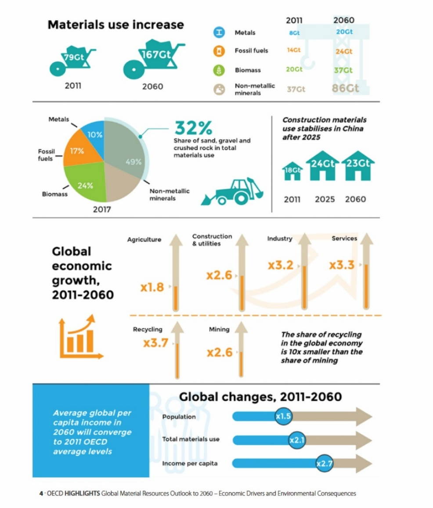
Fig. 24 איור 4.3: תחזית הדוח של ה-OECD לגבי השינוי בצריכת חומרי גלם בהשוואה בין 2011 ו-2060 תוך ניסיון לעמוד ביעדי אקלים - SDS. מקור – OECD (2018) www.oecd.org/environment/waste/highlights-global-material-resources-outlook-to-2060.pdf ; Reprinted with permission. OECD (2018) www.oecd.org/environment/waste/highlights-global-material-resources-outlook-to-2060.pdf ; Reprinted with permission.#
{kind=link}
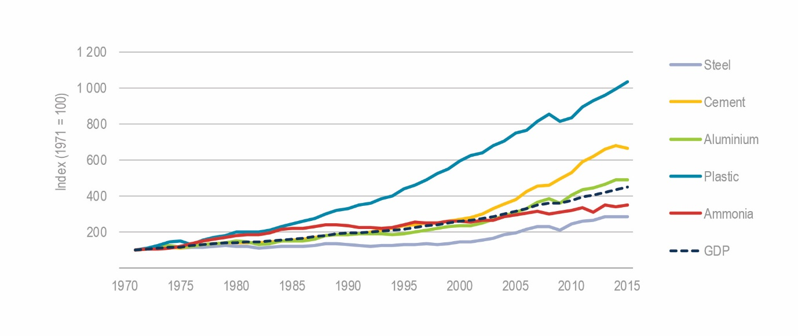
Fig. 25 איור 4.4: הגידול בייצור פלדה, מלט, אלומיניום, פלסטיק, אמוניה (דשן חקלאי) ותוצר מקומי גולמי ביחס לשנת 1970. מקור – IEA (2018) IEA ; CC BY 4.0; Reprinted with permission.#
כלכלה מעגלית (Circular Economy)#
לכל מוצר יש מסלול חיים המתחיל בכריית חומרי הגלם הדרושים ועיבודם ומסתיים כאשר המוצר מגיע לסוף חייו. האתגר הסביבתי הראשון שהוזכר לעיל הוא לעבור ממסלול חיים קווי: ייצור – שימוש – הטמנה, למסלול חיים מעגלי - כלכלה מעגלית:[31] ייצור – שימוש – פירוק ומחזור חומרי הגלם – ייצור מוצרים חדשים. כלכלה מעגלית מתבססת על מספר עקרונות:[32] (1) יישום עקרונות ”אנליזה של מחזור חיים“ (LCA)[33] הכוללת השוואת חלופות ותמחורן,[34] (2) ייעול תהליך הייצור, (3) שילוב חומרי גלם ממוחזרים במוצר, כולל שימוש בחומרי גלם שהיו פסולת של פעילות כלכלית אחרת, (4) תכנון ועיצוב מוצר מראש, כלומר, תכנון מוצר שמתאים למחזור, שנועד לשימוש ממושך (עמיד, מתאים לשימוש חוזר, בר תיקון ומודולרי( ושאינו מכיל חומרים רעילים מוכרים וחדשים (emerging contaminants – see ch. 9),[35] (5) פיתוח מודל עסקי אשר מתעדף ככל האפשר מתן שירות במקום מוצר, שימוש חוזר במוצרים וייצור מחדש בהסתמך על החומרים המצויים במוצר הישן. ספר שפורסם ב-2023 מסכם בצורה מקיפה את יישום העקרונות של כלכלה מעגלית לגבי פסולת של תעשיית מתכות, שאריות של תנורי שריפה בתחנות כוח ובמתקני שריפת פסולת, ופסולת עירונית.[36] הספר גם מציג את ההשלכות הסביבתיות והבריאותיות של שימוש בפסולת ופורש את הצעדים שיש לנקוט על מנת למזער את הסכנות הטמונות בכך.[37] בנוסף לכל אלה יש לפתח מאגרי מידע ודרכי סריקה של מידע לגבי חומרי פסולת היכולים לשמש כחומרי גלם,[38] כל זאת על מנת ל“שדך“ בין מפעלי ייצור בכל מדינה ולעיתים גם במדינות שונות. ישנה גם מגמה לעשות שדרוג של מוצרים ישנים באמצעות שימוש חוזר (למשל כחפצי נוי) וכך להעלות את ערכם הכלכלי, מושג הנקרא upcycling.[39] לכלכלה מעגלית יש חשיבות גדולה ביותר בהתמודדות עם הנזקים שגורמת החברה האנושית למשאבי כדור הארץ, אולם תרומתה מוגבלת כל עוד נמשכת העלייה ברמת החיים וגידול האוכלוסייה, שכן שניהם מחייבים ניצול חומרי גלם חדשים. נושא הפסולת יידון שוב בפרק 12.
ייצור פלדה והשלכותיו הסביבתיות#
פלדה היא סגסוגת ברזל (Fe) עם מתכות נוספות, בעיקר כרום (Cr), לעיתים ניקל (Ni) וגם מעט וונדיום (V)[41] ומנגן (Mn). רוב סוגי הפלדה העיקריים מכילים פחות מ-1% פחמן. בעולם מיוצרים כיום כשני מיליארד טון פלדה (כ-50% מהם לבנייה), כאשר סין מייצרת כשני שליש מהכמות הכוללת.[42] תהליך ייצור פלדה מהווה כ-95% מייצור כלל המתכות. בהמשך הפרק נרחיב על ההיבטים הסביבתיים של כרייה ועיבוד של חלק מהמתכות האחרות. ייצור פלדה מתבצע בשני שלבים: (1) ironmaking ו-(2) steelmaking. השלב הראשון מתבצע רק כאשר מעבדים בצר (ore) שהופק במכרה המכיל לפחות 27% ברזל הנמצא במינרלים עשירי ברזל (בעיקר המטיט ומגנטיט),[43] ופוסחים עליו כאשר ממחזרים פלדה או ברזל.
בשלב הראשון (ironmaking) מחממים בתנור (כ-2550° צלזיוס) את הבצר הטחון בנוכחות פחם מעובד ( COKE- coal heated in the absence of air) ואבן גיר (\(\ce{CaCO3}\)) ומתרחשות חמש הריאקציות הבאות (האותיות בסוגריים מציינות את הפאזות של התרכובות השונות: גז (g), מוצק (s), נוזל - נתך (l).
1. חמצון חלקי של פחם ויצירת פחמן חד חמצני (CO) וחום (תהליך המשחרר אנרגיה; ∆G שלילי):
חיזור של ברזל תלת-ערכי הנמצא בהמטיט על ידי פחמן חד חמצני ויצירת נתך ברזל מתכתי ושחרור פד“ח (תהליך הדורש השקעת אנרגיה; ∆G חיובי):
3. חיזור של ברזל תלת-ערכי הנמצא בהמטיט על ידי פחם מעובד ויצירת נתך ברזל מתכתי ושחרור פד“ח (תהליך הדורש השקעת אנרגיה):
4. פרוק אבן גיר ויצירת תחמוצת סידן ושחרור פד“ח (תהליך הדורש השקעת אנרגיה):
5. תגובה של תחמוצת סידן עם תחמוצת צורן שהגיעה עם מינרלי הברזל ליצירת סיג (slag) ועל ידי כך סילוק הצורן מהמערכת, בזכות העובדה שהסיג פחות צפוף מברזל מותך וצף מעליו, וכך ניתן להפריד ביניהם (תהליך הדורש השקעת אנרגיה):
בשלב השני של ייצור הפלדה (steelmaking), עודפי הפחמן הנמצאים בברזל המותך מסולקים (בתור פד“ח) ויחד אתם מסולקים מהברזל עודפי גופרית וזרחן (שמגיבים עם עודפי הסידן ויוצרים סיג). לאחר מכן, מוסיפים את הכמויות הנדרשות של כרום ושל המתכות האחרות ליצירת הסגסוגת. כמו בשלב הראשון גם תהליך זה מחייב השקעת אנרגיה רבה והוא נעשה בטמפרטורה מעל 2500° צלזיוס. השלב השני נעשה בשני אופנים בהתאם לחומר הגלם, ברזל ראשוני שהופק בשלב הראשון ממינרלי ברזל, או ברזל או פלדה ממוחזרים.
אחת ההשפעות הסביבתיות העיקריות של תהליך ייצור הפלדה הוא שחרור פד“ח, הן כתוצאה מהראקציות שצוינו לעיל והן משריפת דלקים פוסיליים הנדרשים כדי להניע את התהליך. כיום, כ-50% מהאנרגיה הנצרכת בתהליך מתקבלת משריפת פחם מעובד. כתוצאה מכך, ייצור טון אחד של פלדה מברזל ראשוני פולט לאטמוספרה כ-1.8 טון פד“ח וצורך כ-19 GJ (מיליארד ג’אול). בשנת 2020 ייצור פלדה תרם כ- 8%מפליטת הפד“ח העולמית.[46] מחזור של פלדה מקטין בעשרות אחוזים את פליטת הפד“ח לכל טון של פלדה. מקורם של כ-22% מהפלדה המיוצרת כיום הם בברזל או פלדה ממוחזרים. מעבר לפליטות פד“ח, אבק עשיר בברזל וכן גזים של גופרית דו חמצנית, אמוניה וחומרים אורגנים נדיפים (שמקורם בפחם) נפלטים לאוויר מתנורי העיבוד ויוצרים זיהום אוויר. סקירה של המצב בעולם וצפי לעשורים הקרובים התפרסמה לאחרונה.[47] בפרק 11 נרחיב על השיטות האפשריות לטיפול בזיהום אוויר תעשייתי.
מעבר לפליטת פד“ח ומזהמי אוויר, ייצור פלדה גורם למספר נזקים סביבתיים נוספים: (1) מכרות ברזל הם ברובם מכרות פתוחים הפוגעים בנוף ובבתי גידול של צמחים ובעלי חיים. בשולי המכרות נערמים שפכים של חומר גלם עשיר בברזל אך באיכות ירודה. כאשר יורד גשם ומים זורמים דרך ערמות השפכים, הברזל, שחלקו ברזל דו-ערכי מתחמצן על ידי החמצן המומס במים והופך לברזל תלת-ערכי. זהו תהליך המגביר את חומציות (acidification) המים,[48] ולכן תשטיפי מכרות ברזל הם תמיסות חומציות מאכלות (corrosive) הפוגעות בכל הנקרה במסלול זרימתן. במקומות בהם יש פיקוח סביבתי נאות, חברות כרייה נדרשות לנטר (monitor) את תשטיפי המכרות ולנטרל את החומציות שלהם. (2) מים המשמשים לקירור התנורים בשני שלבי ייצור הפלדה מזדהמים בתהליך (בעיקר ממתכות, גופרית וזרחן הנלווים לברזל בבצר). בעיקרון ניתן למחזר את המים האלה ותוך כדי כך לטפל בהם ולסלק את המזהמים. בתנאים מסוימים אפשר להשתמש במתכות, בגופרית ובזרחן כחומרי גלם לתהליכים אחרים וכך לאפשר כלכלה מעגלית. יחד עם זאת לעיתים קרובות השימוש החוזר בחומרים הללו לא מתבצע ויש לדאוג להטמנתם. (3) חומרי הלוואי של תהליך העיבוד (בעיקר מהשלב הראשון - הסיג) מכילים בנוסף לתחמוצת צורן וסידן גם מתכות קורט, גופרית וזרחן היכולים להוות מטרד סביבתי אם אינם מטופלים כראוי. גם לבעיה זו קיימים כיום פתרונות, ובמפעלי הפקת ברזל רבים משווקים את הסיג כחומר תשתית לכבישים (כלכלה מעגלית).
למרות שפלדה היא אחד מחומרי הגלם שאחוז המחזור שלהם הוא גבוה יחסית (כ-22% מכלל הפלדה), עדיין יש מקום רב לשיפור.[49] העקרון המוביל בשיפור אחוזי המחזור בתעשיות השונות הוא התחשבות בשיקולי מחזור כבר בשלב הייצור או הבניה. למשל, נעשים כיום ניסיונות להימנע ככל הניתן מריתוך קורות פלדה ולתעדף שימוש בברגים, על מנת להקל על השימוש החוזר. כמו כן נעשים מאמצים להפחית את פליטות גזי החממה בייצור פלדה (”פלדה ירוקה“ - green steel) על ידי ניצול מקורות אנרגיה חילופיים במקום דלקים פוסיליים וכן באמצעות שימוש במימן,[50] המופק מאלקטרוליזה של מים באמצעות חשמל המיוצר מאנרגיה מתחדשת, במקום פחמן כחומר המחזר את תחמוצות הברזל.
בשנים האחרונות מושקע מאמץ לייצר ”פלדה ירוקה“ במגוון שיטות ועל ידי כך להפחית פליטות פד“ח.[51] אכן, בשבע מתוך עשר המדינות העיקריות שמייצרות פלדה (סין, יפן, ארה“ב, רוסיה, דרום קוריאה, גרמניה וברזיל) החלו ניסיונות בהיקפים שונים לייצר ”פלדה ירוקה“. למרות זאת ב-2023 התפרסם מחקר שבחן מעל 4,800 מפעלי ייצור ברזל ופלדה והראה שהדרך להפחתה משמעותית של פליטות פד“ח עדין ארוכה.[52]
ייצור מלט ובטון#
בטון הוא חומר הבנייה העיקרי כיום. מרבית מבני המגורים ומתקני התשתית (מפעלים, תחנות כוח, סכרים וגשרים) בנויים מבטון. אחרי מים, בטון הוא החומר בו משתמשת האנושות בכמות הגדולה ביותר (כ-20 מיליארד טון).[53] הבטון מכיל חול, חצץ, מים ומלט ועל פי רוב גם קונסטרוקציה מברזל. מלט מהווה חמישית עד רבע מהבטון מבחינה נפחית, אולם ייצור מלט אחראי על 90% מהפד“ח שנפלט בעת ייצור הבטון.[54] מידי שנה מיוצרים כארבעה מיליארד טון של מלט, והתחזית היא שעד 2030 כמות המלט המיוצר תעלה לחמישה מיליארד טון.[55] לפני שנדון בייצור מלט, בפליטות פד“ח ובאמצעים להפחית אותן, יש לתת את הדעת על כך שבטון הוא הסוכן המובהק ביותר של האנושות בנגיסה בשטחים פתוחים, בפגיעה בנוף, ביצירת איי-חום עירוניים ובהשארת חותם ארוך טווח בטבע. במדינות כמו יפן וסין, השימוש בבטון במבני תשתית פוגע בנוף בצורה מאסיבית במיוחד. זאת ועוד, סין מייצאת כיום את תנופת ההקמה של תשתיות זוללות בטון למדינות נוספות.[56] מדינות אחרות ביניהן הודו ואינדונזיה נמצאות כעת בפתחה של תנופת בנייה בבטון. כמו כן, יש הטוענים שתעשיית הבנייה, בה מועסקים מאות מיליוני אנשים, מעודדת שחיתות שלטונית הנחוצה להמשך הפעילות התעשייתית ושבמסגרתה מקודמים גם פרויקטים שתועלתם מוטלת בספק.[57] עם זאת, לבנייה בבטון יש גם צדדים חיוביים מבחינה סביבתית, למשל החלפה של רצפות בוץ ברצפות בטון מפחיתה משמעותית את הסיכוי לחלות במחלות זיהומיות שונות.[58] ראוי להוסיף שבארצות מתפתחות התחליף העיקרי לבנייה בבטון היא בנייה באמצעות לבנים שרופות, שגם לה יש השלכות סביבתיות משמעותיות והיא אחראית לכ-1% מפליטות הפד“ח לאטמוספרה.[59]
הספקת חומרי הגלם הדרושים לייצור בטון (חול, חצץ, מים ומלט) מהווה אתגר סביבתי. למשל, כריית חול באתרים הנמצאים במערכות אקולוגיות רגישות. רק לאחרונה התפרסמה עבודה המציגה שיטה לאיתור של מקורות החול הנמצא באתרי בנייה. השיטה מבוססת על אנליזה של תכונות מינרלוגיות וכימיות של החול, והיא יכולה לשמש למניעת כרייה לא חוקית.[60] כמות המים הנצרכת בייצור בטון שקולה פחות או יותר לכמות המלט, כלומר כארבעה מיליארד מטר מעוקב מים נגרעים מידי שנה ממחזור המים הטבעי ונבלעים בבטון. כמות זאת שקולה לכל נפח המים האגור בכנרת. במילים אחרות, מידי שנה האנושות מאבדת כנרת אחת לטובת ייצור בטון. האובדן הזה גרוע הרבה יותר מזיהום מקורות המים שאותו כמעט תמיד ניתן לפתור בדרך כזאת או אחרת (ראו פרק 9).
אולם, כפי שצוין קודם, ייצור מלט הוא החלק הבעייתי ביותר בייצור בטון מבחינה סביבתית. מלט (mostly Portland cement) מיוצר בשני שלבים. בשלב הראשון מיוצר קלינקר (clinker) באמצעות ריאקציה כימית בין חומר עשיר בסידן (בעיקר סלע קרבונטי כמו גיר או קרטון) עם חומר עשיר בצורן, אלומיניום וברזל כגון קרקע עשירה בחרסית או אפר פחם.[61] ריאקציה זאת מחייבת חימום לטמפרטורה של כ-1400° צלזיוס, כלומר השקעת אנרגיה רבה. בשלב השני הקלינקר מעורבב עם כמות קטנה של גבס וגיר. ייצור טון מלט משחרר לאטמוספרה פד“ח הן מהתגובה הכימית (פירוק הקרבונט - \(\ce{CO3}\)) והן משימוש בדלקים פוסיליים. בחישוב כללי, ייצור מלט תורם כ-8% מכלל פליטות הפד“ח של האנושות.[62] בשנים האחרונות מנסים להוסיף למפעלי ייצור מלט מערכת סילוק פד“ח בטרם ייפלט לאטמוספירה, ולעשות זאת במינימום השקעת אנרגיה ותוספת שולית למחיר של ייצור המלט (Amine-Based \(\ce{CO2}\) Capture).[63] חשוב לזכור שתהליך ייצור המלט גורם גם לזיהום אוויר במורד הרוח, בעיקר חלקיקים מרחפים (נרחיב על כך בפרק 11) ולמפגע נופי משמעותי בשל כריית חומרי הגלם של המלט.
בשנים האחרונות מושקע מאמץ ניכר בפיתוח שיטות חדשות של ייצור ומחזור בטון ומלט.[64] אחת השיטות למחזור בטון כוללת גריסת בטון והוספתו לקרקעות לחות על מנת לייצבן. שימושים נוספים של בטון מתבססים על היותו חומר אלקלי (בסיסי, סותר חומציות) המסוגל לשחרר סידן הידרוקסיד (\(\ce{Ca(OH)2}\)). בהיותו חומר אלקלי ניתן למצוא לבטון גרוס שימוש לטיהור שפכים חומציים, נטרול גזים חומציים (עשירים בתחמוצת גופרית או תחמוצת חנקן) ועוד. אחד השימושים המעניינים ביותר הוא שימוש בבטון גרוס (וחומרי בניה נוספים)[65] על מנת לקלוט פד“ח מן האטמוספרה (הגבה של תחמוצת סידן שנמצאת בבטון בריכוז גבוה):
היום מושקעים מאמצים רבים על מנת לייעל את קליטת הפד“ח, לשפר את תכונות הקרבונט (\(\ce{CaCO3}\)) שמיוצר בתהליך ולמצוא לו שימושים. לאחרונה פורסם מאמר נוסף שהציע תהליך למחזור מלט.[66] המחזור מתבסס על שימוש בעיסת מלט המופקת מבטון משומש. החומר שנוצר בתהליך המחזור דומה בתכונותיו למלט המקורי. השיטה נמצאת עדיין בחיתוליה והזמן יגיד האם ניתן ליישם אותה בקנה מידה מסחרי, אם כי ככל הנראה פוטנציאל הקיבוע של פד“ח באמצעות שיטה זאת או דומות לה נמוך מכמות הפד“ח המשתחררת בזמן ייצור המלט.[67] נתון זה מחדד את הצורך למצוא תחליפים למלט קונבנציונלי שייצורם אינו פולט פד“ח. אכן, במאמר[68] שהתפרסם ב-2025 והיכה גלים[69] הוצע להוסיף לבטון בזמן הייצור חומרים המגיבים עם פד“ח אטמוספרי וסופחים אותו. מאמר נוסף הציג חומר מבוסס אתרינגיט (ettringite - \(\ce{Ca6Al2(SO4)3.26H2O}\)) שיכול להוות ציפוי לקירות וגגות מבנים ולהפחית משמעותית את כמות הקרינה שהם בולעים ולהגדיל את כמות הקרינה שהם פולטים וכך לקרר המידה ניכרת את המבנים.[70]
ישנה אסכולה שלמה של אדריכלים ומהנדסים המקדמת שימוש בעץ (מיערות הנטועים למטרה זאת) גם בבנייה של רבי קומות. כפי שרואים באיור 4.5, יש הבדל ניכר בין עץ המיועד לבנייה שמגיע מיערות נטועים (managed forests) לבין עץ המגיע מיערות שאינם נטועים (נרחיב על נושא זה בפרק 8). ישנם גם ניסיונות להשתמש במלח כחומר גלם ליצירת בלוקים לבנייה.[71] חומר נוסף שזכה לאחרונה לתשומת לב הוא ”פרוק“ (Ferrock), בעיקר משום שתהליך ייצורו מתבסס על שימוש בפסולת של תעשיות אחרות (פלדה וזכוכית) והוא מקבע פד“ח מן האטמוספרה. בשלב הראשון של תהליך ייצור ה“פרוק“, תוצרי לוואי של ייצור הפלדה (בעיקר אבק של פלדה וברזל) מחוממים ומגיבים עם פד“ח מן האטמוספרה ליצירת ברזל-קרבונט. בשלב השני מגיבים את הברזל-קרבונט עם שברי זכוכית ממוחזרת, שברי סלע עשיר בברזל דו-ערכי, מים ואוויר מועשר בפד“ח על מנת לקבל את התוצר הסופי, שהוא בעל תכונות דומות למלט, וחזק פי חמש ממלט רגיל. כרגע ה“פרוק“ עדיין מיוצר בכמויות קטנות יחסית המתאימות לפרויקטים קטנים. בדומה, לאחרונה פורסם מאמר שהציג דרך לייצר תחליף אחר למלט בעזרת שימוש בפסולת בניין ופסולת זכוכית שעברו טחינה,[72] ויש שימוש גובר בחומר הנקרא Hempcrete בכמה ארצות.[73] ענף הבנייה, הידוע בשמרנות שלו, עדיין לא עושה שימוש נרחב בחומרים הללו. למרות השמרנות הזאת, יש בשנים האחרונות נטייה מסוימת לאמץ חומרים וטכנולוגיות בניה חדשות, ידידותיות יותר לסביבה מבחינת סוג חומרי הגלם, חסכון באנרגיה, ופליטות פד“ח. כמה מהטכנולוגיות הללו מוצגות באיור 4.6.
{kind=link}
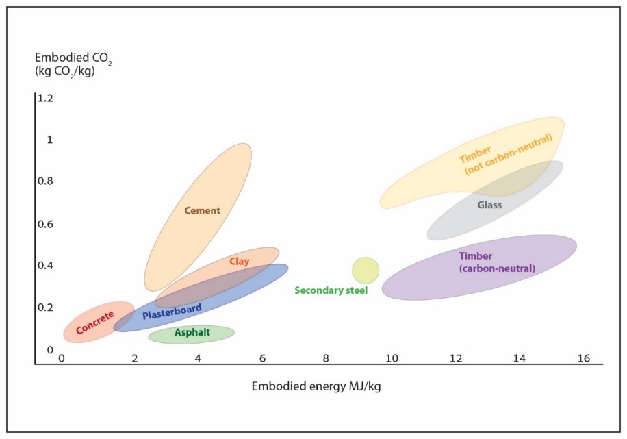
Fig. 26 איור 4.5: כמות פליטות פד“ח והאנרגיה אשר גלומות בחומרים המשמשים לבנייה בבריטניה. על פי - Lehne, J. & Preston, F. (2018) Chatham House#
{kind=link}
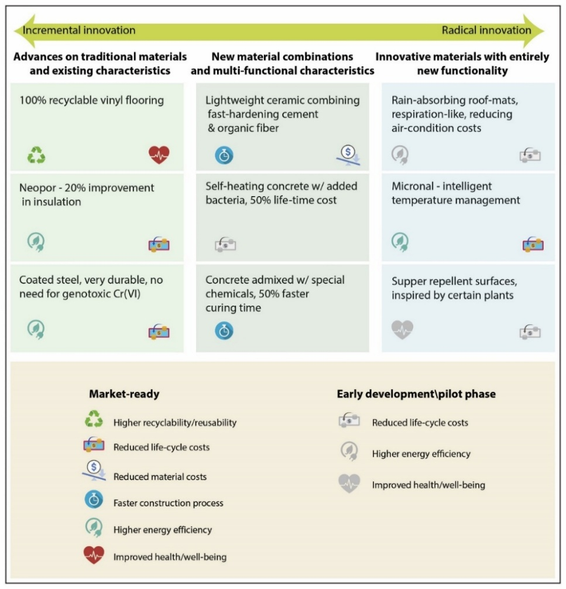
Fig. 27 איור 4.6: דוגמאות לחומרי בנייה וגימור מתקדמים, בין היתר במובנים של יעילות אנרגטית גבוהה יותר. על פי - World Economic Forum – WEF#
הפקת מתכות#
מתכות מסוגים שונים נחוצות למגוון תעשיות, החל מאלקטרוניקה וכלה בייצור תחנות כוח (TCE - technology critical elements).[74] כריית מתכות מסלעי הקרום של כדור הארץ מחישה בצורה משמעותית את קצב השחרור שלהן לקרקעות, למאגרי מים ולאטמוספרה בהשוואה לתהליכי בליה טבעיים (נחזור לנושא זה בפרק 5).[75] חלק מהמתכות בהן נדון רעילות ביותר וחלקן מופקות[76] בשיטות הרסניות לסביבה ולאנשים העוסקים בהן.[77] כריית מתכות יוצרת בעיות סביבתיות גם במדינות עם מודעות סביבתית גבוהה (למשל קנדה) בה כריית מתכות במרבית המחוזות שנחקרו לא נעשתה בשקיפות ראויה והפיקוח על פעילות המכרות לקתה בחסר.[78] ראוי לציין שלעיתים נעשים מאמצים לשפר, לייעל ולהפחית את הנזק שגורמת הכרייה.[79]
המעבר למשק אנרגיה המבוסס על אנרגיות מתחדשות מחייב את הגברת ההפקה של מספר מתכות.[80] הצפי הוא שהדרישה של משק האנרגיה לליתיום (Li) תגדל פי 40, הדרישה לניקל (Ni) וקובלט (Co) תגדל פי 20-25, הדרישה למספר עפרות נדירות (REE) תגדל פי שבע. כל זאת על מנת לעמוד ביעד של פחות משתי מעלות צלזיוס עליית הטמפרטורה הממוצעת בכדור הארץ (איור 4.7).[81] הדרישה הגבוהה למתכות במשק אנרגיה המבוסס על אנרגיות מתחדשות נובעת מכמה סיבות. ראשית, בייצור מתקני אנרגיה חילופית משתמשים בהרבה יותר מתכות בהשוואה לתחנות כוח גרעיניות ופוסיליות. לדוגמא, תחנת רוח ימית משתמשת בכמות מתכות גדולה פי תשע מזו של תחנה השורפת גז טבעי. שנית, ייצור רכב חשמלי צורך פי שישה יותר מתכות (לא כולל ברזל) מייצור רכב עם מנוע שריפה פנימית (איור 4.8).[82] מעבר לכך, הצורך לחַשמל את כל צרכני האנרגיה בבתים ובמפעלים מחייב הרחבה בעשרות אחוזים של רשת קווי החשמל המושתת על אלומיניום וברזל (לתשתיות) ועל כבלים עשויי נחושת. לרוע המזל, כריית מתכות הנחוצות כל כך למעבר לאנרגיות מתחדשות ולמאבק בהתחממות גלובלית נפגעת מעליה בשכיחות שטפונות, מחסור במים, או גלי חום הנגרמים עקב ההתחממות הגלובלית.[83]
על מנת לייעל את הדיון בעתיד הצפוי לכריית מתכות והפקתן הוצעו שלושה קריטריונים על פיהם ממיינים את המתכות הנחוצות ביותר בענפי התעשייה השונים:[84] (1) מתכות שכרייתן והפקתן כרוכות בנזק סביבתי גדול: זהב (Au), פלטינה (Pt) ומתכות מקבוצת הפלטינה (בעיקר Pd, Ir, Rh). עקב ערכן הגבוה של מתכות אלה, גם כאשר ריכוזן נמוך, כרייתן כדאית מבחינה כלכלית, מה שגורר פגיעה מאסיבית בשטחים פתוחים; (2) מתכות נדירות בקרום כדור הארץ, המופקות במקרים רבים כתוצר לוואי בתהליך הפקתן של מתכות אחרות: אינדיום (In), ארסן (As – מתכת למחצה), תליום (Tl), אנטימון (Sb – מתכת למחצה), כסף (Ag) וסלניום (Se – אל מתכת). יסודות כימיים אלה חיוניים בין היתר לייצור פאנלים סולארים דקים, כך שהדרישה להם צפויה לעלות בשנים הקרובות; (3) מתכות שמקורות האספקה שלהן אינם בטוחים, בעיקר מסיבות גאו-פוליטיות (נמצאות בעיקר במדינה אחת או באזור רגיש מבחינה ביטחונית): מגנזיום (Mg), כרום (Cr), מנגן (Mn), רודיום (Rh), איטריום (Y) ומספר עפרות נדירות (REE). מחברי המחקר בו מופיעות המתכות שלעיל הציעו עדכון מידי חמש שנים, שכן דרישות התעשייה משתנות וייתכן שלחלק מהן יימצא תחליף.[85] למרות שחלפו מעל חמש שנים מאז פרסום המאמר, לא נעשה ככל הנראה ניסיון לעדכן את הרשימה. שנתיים לאחר פרסומה, בשנת 2017, פרסם הבנק העולמי הערכות לגבי הדרישה הצפויה למתכות שונות על מנת לעמוד ביעדים של התחממות גלובלית של 2° ו-4° צלזיוס (בעיקר לייצור טורבינות רוח ותאים פוטו-וולטאים).[86] שתי העבודות הללו משלימות אחת את השנייה ויש ביניהן התאמה טובה. לצד תמונת המצב העולה ממחקרים אלו, ישנם גם תהליכים שקשה לחזות. כך למשל ישנה אי-וודאות גדולה לגבי סוגי המתכות והכמויות הנדרשות לייצור מכוניות חשמליות ותחנות כוח סולאריות ורוח בגלל קצב השינוי המהיר בטכנולוגיה, למשל המעבר ממנועים עם מגנטים קבועים עתירי REE, למנועים מסוגים אחרים. לעומת זאת, פחות סביר שיימצאו תחליפים לאלומיניום לצרכי בנייה ולנחושת להולכת חשמל ולכן סביר להניח שהדרישה להן תלך ותגדל כצפוי.
דוח של ה-IEA מ-2021 מזהיר מפני קשיים בעמידה ביעדי ההפקה של חלק מהמתכות כגון נחושת וליתיום,[87] בין היתר בגלל שעוברות שנים רבות (כ-15 עד 20) בין גילוי מרבץ כלכלי ועד שכרייתו מתבצעת בהיקף מסחרי. כפי שצוין קודם, ישנן מספר מתכות המופקות במדינה אחת או שתיים ובחלק מהמקרים באזורים קשים לגישה הסובלים ממתיחות פוליטית או ממחסור במים הדרושים לכריה. למשל, סין השתלטה בעשורים האחרונים על העיבוד של מתכות רבות ועל הכרייה והעיבוד של עפרות נדירות (איור 4.9). בדוח זה של ה-IEA מפורטות גם המלצות שנועדו להבטיח את ההספקה הדרושה של המתכות החיוניות למעבר למשק אנרגיה המבוסס על אנרגיות חילופיות. בין היתר מדובר על הגברת המחזור ופיתוח שיטות מחזור חדשות (בעיקר מבוססות פוטוכימיה וביו-הידרו-מטלורגיה),[88] שילוב שיקולים סביבתיים וחברתיים בבחינת החלופות הטכנולוגיות השונות וכן שכלול שיטות מיצוי המתכות ממכרות באיכות נמוכה.[89] מסקנות דומות לגבי כל הנושאים הללו מופיעות בדוח של ה-IEA משנת 2025, אם כי שם נטען שבעיית המחסור רלוונטית בעיקר לגבי נחושת ובמידה פחותה לגבי ליתיום.[90] הדוח של 2025 מדגיש את הבעייתיות של משק המתכות הנובעת מן הדומיננטיות של סין (ובמידה פחותה ארצות בודדות נוספות) בכרייה ובעיקר בעיבוד של מרבית המתכות החיוניות, מה שכבר יצר קשיים בשרשרת האספקה עקב מתחים גאו-פוליטיים. דוחות אלה וכן מחקרים אחרים, מצביעים על כך שמעבר למשק אנרגיה המבוסס על אנרגיות חילופיות משמעו מעבר ממשק אנרגיה המבוסס על כריית דלקים (פוסיליים) למשק אנרגיה המבוסס על כרית מחצבים, על כל המשמעויות הכרוכות בכך: פגיעה בשטחים פתוחים, צריכת מים מוגברת,[91] זיהום מקורות מים ומי ים בקרבת החוף,[92] פגיעה במגוון המינים, פגיעה באוכלוסיות כורים הנחשפות לזיהום הכרוך בהפקת מתכות,[93] שינויים חדים בעלויות ומתח גאו-פוליטי. בשנים האחרונות מופנית תשומת לב רבה יותר לבחירה מושכלת של מתכות על מנת שיחליפו את השימוש במתכות רעילות,[94] נדירות, בעיתיות מבחינה גאו-פוליטית או קשות להשגה.[95] מחקרים רבים מדגישים ששילוב של שיקולים סביבתיים וחברתיים כבר בשלבי התכנון הראשוניים של מיזמי תשתית, יתרום לקיימות של הפרויקטים לאורך זמן. לצערנו זה איננו המצב לגבי כריה של חלק מהמתכות החיוניות למשק האנרגיות המתחדשות. כפי שנרחיב בהמשך, כריית מתכות כרוכה לעיתים בניצול מחפיר של הכורים.
תקצר היריעה מלדון בכל עשרות המתכות הנמצאות במוצרים שונים ועל כן נתמקד במספר מתכות שהביקוש להן נמצא במגמת עליה מתמדת: נחושת (Cu), ליתיום (Li), קובלט (Co), ועפרות נדירות (REE). באמצעות הדיון במתכות אלו נדגים את ההיבטים הסביבתיים של כרייה והפקת מתכות החיוניות לכלכלה העולמית, אשר בגלל מחירן הגבוה יחסית (מעל 1,000 דולר לטון),[96] גם מרבצים המכילים ריכוזים נמוכים יחסית של מתכות, נעשים כדאיים מבחינה כלכלית. כאמור יש צפי שהדרישה למתכות הללו (כמו גם עופרת וניקל) תגדל משמעותית עקב המעבר לכלכלה המבוססת על ”חשמול“ נרחב של ציי תחבורה ומפעלים ומעבר לאנרגיה סולארית ולאנרגית רוח, כחלק מן המאבק בהתחממות גלובלית.[97]
{kind=link}
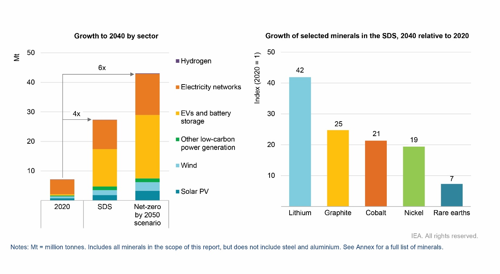
Fig. 28 איור 4.7: הדרישה למינרלים ומתכות לצורך טכנולוגיות אנרגיה נקייה לפי שני תרחישים (אפס פליטות של גזי חממה עד 2050, SDS – עמידה ביעד של התחממות של פחות מ-2° צלזיוס). (א) עלייה מ-2020 ל-2040 בסקטורים שונים. (ב) גידול בצריכת גרפיט ומספר מתכות מ-2020 ל-2040 על פי תרחיש ה-SDS. Rare earth elements = REE. מקור – IEA (2021) IEA ; CC BY 4.0; Reprinted with permission.#
{kind=link}
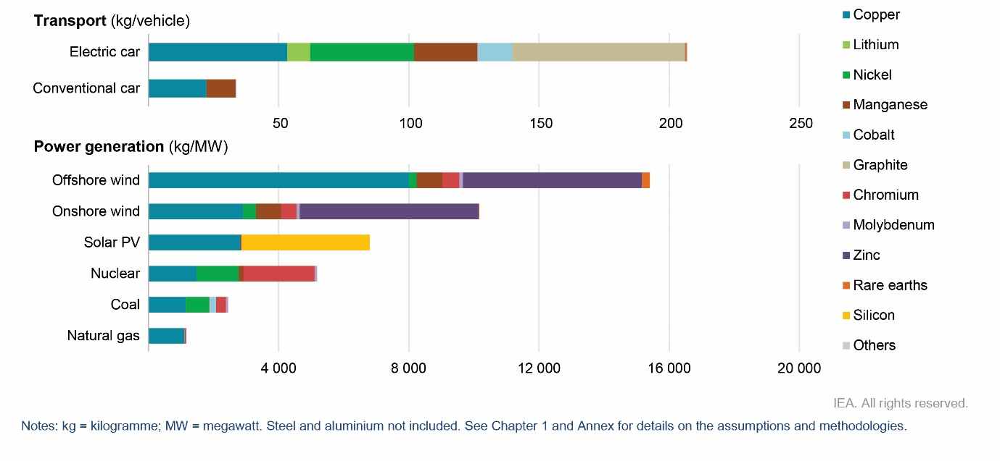
Fig. 29 איור 4.8: כמות המתכות (ללא אלומיניום וברזל) הנצרכות במכוניות (לקילוגרם) ובמתקני הפקת אנרגיה (ל-MW). מקור – IEA (2021) IEA ; CC BY 4.0; Reprinted with permission.#
{kind=link}
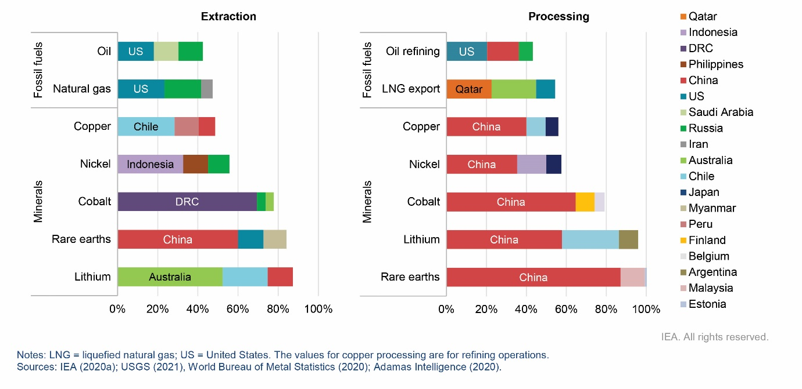
Fig. 30 איור 4.9: חלקן של המדינות העיקריות בכרייה ועיבוד של מתכות ודלקים פוסיליים שונים. מקור – IEA (2021) IEA ; CC BY 4.0; Reprinted with permission.#
נחושת (Cu)#
מופע, תכונות ושימושים תעשייתיים#
נחושת נמצאת בריכוז נמוך בכל סוגי הסלעים בכדור הארץ. ריכוזה הוא כ-28 חלקים למיליון (ppm) בסלעי קרום כדור הארץ בממוצע.[98] היא מופקת מסלעים המכילים מינרלים עשירי נחושת, הנקראים מינרלי בצר שלהם תכולת נחושת (ולעיתים גם מתכות אחרות כגון קובלט, ניקל, עופרת) גבוהה יותר. התכולה המינימלית של נחושת במינרלי בצר הנכרים כיום היא כ-0.5% (5,000 ppm),[99] כלומר רוב הסלע הוא חומר טפל. נחושת נידונה כאן בעיקר בגלל הצפי לגידול בצריכתה ובקשיי אספקתה, מה שעלול לגרום להחרפת הנזק הסביבתי שתגרום כרייתה. נחושת היא המתכת השלישית הנצרכת ביותר על ידי האנושות אחרי ברזל ואלומיניום, אבל היא פי 1,000 עד 2,500 פחות נפוצה מהן בקרום כדור הארץ. בריכוזים נמוכים נחושת היא נוטריינט המשתתף במספר רב של תהליכים בתא החי.[100] כמו כן ליון הנחושת המומס במים יש שימוש (ביחד עם יון הכסף -Ag ) בטיהור מים ממיקרואורגניזמים. לנחושת יש מוליכות חשמלית מצוינת ועמידות לקורוזיה (בעיקר חמצון). מבין המתכות עם מוליכות חשמלית משובחת נחושת היא הזולה ביותר, בהשוואה לזהב, שהוא יקר מאד וכבד מאד ולכסף.[101] כיום האנושות צורכת כ-25 מיליון טון נחושת, כאשר משק האנרגיה המתחדשת משתמש בכרבע מהכמות. הצפי הוא שהדרישה לנחושת תגדל פי שתיים במגזר זה עד 2040 מה שיכתיב גידול משמעותי בצריכת נחושת בכלל.[102] אכן בשנים האחרונות צריכת הנחושת עולה בקצב של כ-3% בשנה,[103] כלומר כמות הנחושת הנצרכת גדלה פי שתיים מידי כ-23 שנים.
דרכי הפקה#
ישנם שני סוגי תהליכים לעיבוד ויצירת נחושת מתכתית:[104] (1) עיבוד באמצעות חימום והתכה (pyrometallurgical process) הכולל כתישת סלע המקור, הפרדה מכאנית בין מינרלי הבצר העשירים בנחושת לשאר המינרלים (froth flotation) ויצירת ערמות של חומר טפל (סיג - slag) עם מעט מינרלי בצר שלא הופרדו (tailings). לאחר מכן התכה של מינרלי הבצר והפרדה בין נחושת ליסודות אחרים. זהו שלב עתיר אנרגיה המתבצע בטמפרטורה של מעל 1100° צלזיוס וכרוך ביצירת חומר טפל נוסף. לבסוף מתבצע חיזור חשמלי לקבלת נחושת בדרגת ניקיון מעל 99%. (2) עיבוד באמצעות מיצוי חומצי (hydrometallurgical process - Sx-Ew) הכוללת כתישת סלע המקור, הפרדה מכאנית של מינרלי הבצר, שטיפתם עם חומצה הממיסה את מינרלי הבצר, מיצוי הנחושת המומסת, ולבסוף חיזור חשמלי לקבלת נחושת מתכתית. רוב העיבוד בעולם נעשה באמצעות התהליך הראשון (pyrometallurgical process) אולם יש העדפה להשתמש במיצוי חומצי כאשר מדובר בבצרים עם תכולת נחושת נמוכה או בבצרים המכילים מינרלים עשירים בתחמוצות נחושת.
נזקים סביבתיים#
לשני תהליכי ההפקה של נחושת יש מחיר סביבתי. שני התהליכים צורכים כמות אנרגיה רבה (בעיקר הראשון), ובתהליך השני יש סכנה לזיהום סביבת המכרה עם תשטיפים חומציים. כמו כן בשני התהליכים צריכת המים רבה, והמים מזדהמים על ידי מתכות שונות, כולל מתכות רעילות. שני התהליכים נוגסים בשטחים פתוחים ובמקרים רבים פוגעים באורח חייהן של אוכלוסיות מקומיות.[105] כאמור, ההשפעות הללו משותפות לכרייה של כל המתכות הנצרכות בתעשייה. כפי שצוין קודם, ברוב המקרים מפיקים נחושת מסלעים שיותר מ-99% מתכולתם הוא חומר טפל, שלרובו אין שימוש כלכלי (tailings & slag). מצב זה יוצר בעיה הנדסית וסביבתית (ראו לדוגמא את סין)[106] משום שצריך לכרות כמות גדולה מאד של סלעים כדי להפיק נחושת. לאור כל זאת ברור שיש העדפה למחזר מתכות ואכן, ב-2021 כשליש עד 43% מכמות הנחושת שנצרכה, הגיעה מנחושת ממוחזרת.
בעיות גאו-פוליטיות ואתיות#
מרבית כריית נחושת מתבצעת כיום בדרום אמריקה, אולם בדומה למתכות רבות אחרות, מרבית העיבוד נעשה בסין (איור 4.9),[107] עובדה היוצרת מתח גאו-פוליטי (נרחיב על נושא זה בדיון על עפרות נדירות – REE). הביקוש הגובר לנחושת, בעיקר עבור רכבים חשמליים וחשמול מערכת האנרגיה העולמית, הביא לעלייה במחיר הנחושת[108] ובעקבותיה לעליה בתכיפות אירועי גניבה של המתכת.[109] בנוסף קיים חשש שחלק ניכר מהמכרות המיועדים לפיתוח בשנים הקרובות הם מאיכות ירודה, כלומר מכילים מעט יחסית נחושת ולכן הפעלתם תגרום לנזקים סביבתיים רבים יותר. לאור קצב העלייה בצריכת נחושת שהוזכר לעיל, הנזקים הסביבתיים של כריית נחושת צפויים להחריף.
ליתיום (Li)#
מופע, תכונות ושימושים תעשייתיים#
ליתיום הוא יסוד נדיר למדי בכדור הארץ וריכוזו הממוצע בסלעי בקרום כדור הארץ הוא כ-20 חלקים למיליון (ppm).[110] ליתיום נחוץ לייצור מצברים במכוניות חשמליות, סוללות במוצרי אלקטרוניקה ומצברים לאגירת עודפי אנרגיה סולארית ואנרגית רוח. ליתיום איננו מתכת רעילה והוא מרכיב חשוב בתרופה מקובלת לטיפול במחלות נפש.[111] מרבצי הליתיום העיקריים נמצאים בדרום אמריקה, בעיקר בצ’ילה ובפרו וכן באוסטרליה ובמערב סין (בעיקר בתמלחות). בשנים האחרונות משרד האנרגיה האמריקאי ניסה למצוא אתרים מתאימים להפקת ליתיום בתחומי ארצות הברית ובכך להפחית את התלות ביבוא. חלק גדול מהמאמץ מושקע בשני אתרים הנמצאים ב-”Basin and Range Province“.[112] בזכות תהליכים גיאולוגיים שהתרחשו במיליוני השנה האחרונות נוצרו שם מרבצים משמעותיים של ליתיום. כיום מאמצי החיפוש וההפקה מתרכזים במשקעים אגמיים במדינת נוודה ובמשקעים של תמיסות גיאותרמיות באזור אגם סלטון (Salton Sea) בדרום קליפורניה.[113] ישנה גם כריה של ליתיום מסלעים פגמטיטים[114] בתת הקרקע, למשל באוסטרליה ובמדינות מסוימות בארצות הברית כמו נבדה, צפון דקוטה וארקנסו.
דרכי הפקה#
ישנן מספר שיטות להפקת ליתיום בהתאם למופע הכימי והמינרלוגי שלו.[115] אחת השיטות כרוכה במיצוי ליתיום מסלע המקור בעזרת חומצה, בדומה לעיבוד נחושת בשיטה ההידרו-מטלורגית שצוינה קודם. התהליך כרוך ביצירת פסולת המכילה תמיסה חומצית ואף מתכות רעילות בנפח גדול ביותר. למשל למכרה המתוכנן בנבדה יש פוטנציאל לזהם שטח של כ-20 קמ“ר ולפגוע באוכלוסייה המקומית.[116] שיטה שניה היא הפקת ליתיום מתמלחות והיא נעשית בשלושה שלבים: (1) העברת התמלחת לבריכות אידוי בהן שוקעים מינרלים שבהם ריכוז הליתיום מגיע ל-1-6%; (2) סילוק יסודות כימיים אחרים שריכוזם בתמלחת גבוה (למשל, נתרן (Na), מגנזיום (Mg), בורון (B)); (3) השקעת ליתיום-קרבונט, ולעיתים הפיכת ליתיום-קרבונט לתחמוצת ליתיום (הדרוש לסוגים מסוימים של מצברים) באמצעות הגבה עם תחמוצת סידן. פיתוח שיטות חדשות, יעילות והגורמות נזק סביבתי מופחת נמצא בחזית המחקר. לאחרונה, תוארו שתי שיטות מיצוי של ליתיום ממי ים ומתמלחות המנסות לקדם את המטרה הזאת.[117] במקביל נעשים מאמצים רבים לפתח שיטות מחזור של סוללות ליתיום.[118]
נזקים סביבתיים ובעיות גאו-פוליטיות ואתיות#
הפקת ליתיום מאגנים קדומים מלווה בפגיעה חמורה בשטחים פתוחים, בעיקר באגנים של אגמים קדומים ובבני האדם המתגוררים באזור. ממכרות הליתיום במדבר אטקמה בצ’ילה ובארגנטינה מגיעים דיווחים על פגיעות במקורות מים, בשטחים פתוחים ובאוכלוסיות מקומיות.[119] בחלק מהמקרים, כריית ליתיום מתבצעת בסמיכות לכריית נחושת, למשל במכרה אסקונדידה בצ’ילה, מה שמגביר את הפגיעה הסביבתית באזור המכרה.[120] במכרה זה מפיקים ליתיום מתמלחת תת קרקעית שהצטברה בסדימנט של אגם קדום.[121] כמו בעיבוד ויצור מתכות רבות, סין היא היצרנית העיקרית של ליתיום מוגמר המופק מליתיום קרבונט או מתחמוצת ליתיום (איור 4.9). ב-2025 התפרסם מאמר שבחן את פליטות פד“ח וצריכת מים הכרוכים בהפקת ליתיום באמצעות השיטות שפורטו למעלה.[122] מסקנת המחקר היא ששיטות של שיקוע כימי של תמלחות בשיטות המקובלות הן העדיפות מהבחינות הללו. בנוסף, הערכת המחברים היא שהפקת ליתיום במכרות הקיימים כרוכה בפחות פליטות פד“ח וצריכת מים בהשוואה למכרות חדשים הנמצאים בשלבי הרצה ראשונים. תחזית מדאיגה בהתחשב בכך שהדרישה העולמית לליתיום צומחת בקצב מהיר (איור 4.7).
קובלט (Co)#
מופע, תכונות ושימושים תעשייתיים#
קובלט נמצאת בריכוז נמוך של כ-17 חלקים למיליון (ppm) בממוצע בסלעים בקרום כדור הארץ.[123] היא מופקת מסלעי בצר שעל פי רוב הם עשירים גם בנחושת וניקל. לקובלט יש שימושים תעשייתיים רבים כולל יצירת אלקטרודות במצברים של רכבים חשמליים ומוצרי אלקטרוניקה (lithium-ion batteries), סגסוגות מסוימות, כלים מבוססי קרביד,[124] מגנטים של תחנות רוח, ועוד. הביקוש לקובלט נמצא בעלייה מתמדת, והצפי הוא שיהיה גידול משמעותי בביקוש ככל שיוחש המעבר למקורות אנרגיה חילופיים. קצב הגידול מושפע מאד משינויים טכנולוגיים, כמו למשל מעבר לאלקטרודות מבוססות ניקל במקום קובלט,[125] למרות שגם לכריית ניקל יש השלכות סביבתיות כגון פליטת פד“ח (כ-20 טון פד“ח על כל טון ניקל), וזיהום אוויר ומקורות מים.[126] יש הצופים שעלייה בביקוש לקובלט תגרור מאבקים בין מדינות כמו ארה“ב, האיחוד האירופאי וסין על השגתו ועל השגת מתכות אחרות.[127]
דרכי הפקה#
כ-70% מכריית הקובלט מתבצעת כיום בקונגו ומתוכה כחמישית מתבצעת במכרות קטנים (artisanal small-scale) המופעלים באופן מקומי. בדומה לנחושת וליתיום, סין היא היצרנית העיקרית של קובלט מוגמר (איור 4.9).[128] כריית קובלט מתבצעת בעיקר במכרות נחושת או ניקל תוך שימוש באחת מהטכניקות לכריית נחושת שפורטו לעיל, על כל השלכותיהן הסביבתיות (hydrometallurgical OR pyrometallurgical process).
נזקים סביבתיים ובעיות גאו-פוליטיות ואתיות#
הנושא העיקרי אותו חשוב להדגיש בהקשר של כריית הקובלט הוא תנאי העבודה הקשים של עובדי הכרייה בקונגו, הכרוכים במקרים רבים בעבודת ילדים תוך פגיעה משמעותית בתוחלת החיים של הכורים.[129] הנושא זכה לאחרונה לתשומת לב ציבורית וישנן מספר יוזמות המנסות לקדם את נושא הסחר ההוגן ולשפר את תנאי חייהם של הכורים (Fair Cobalt Alliance).[130] ישנם מאמצים דומים לכריה הוגנת של מתכות נוספות בקונגו ובמדינות אפריקאיות אחרות, כמו טנטלום (Ta) וניאוביום (Nb) המופקים מבצרים הנקראים coltan.[131] חלק מהיוזמות הללו מקבלות מימון מחברות כמו טסלה, גוגל, גלנקור (חברת כרייה ענקית בבעלות שוויצרית) ויש גם יוזמות המקבלות תמיכה של חברות סיניות.[132] למרות זאת, פעילי סביבה טוענים שעדין לא נעשה די כדי למנוע כרייה במכרות לא מפוקחים, בעיקר משום שטכנית קשה מאד לזהות את מקור הקובלט. בשנת 2019 הציעה ממשלת קונגו שחברה ממשלתית (EGC) תרכוש את הקובלט ממכרות עצמאיים ובמקביל תפעל על מנת לשפר את תנאי הכרייה ואת בטיחות העובדים. לעומת זאת, חברות הכרייה טוענות שעל קונגו להבהיר את הסטטוס החוקי של אתרים עצמאיים ושהמדינות הרוכשות קובלט (וגם טנטלום ונאוביום) צריכות לקבוע תקן אחראי, בדומה למה שנעשה עם יהלומים. ללא הדברים האלה, קונגו עלולה להחמיץ שוב את ההזדמנות להשתמש במשאבי הטבע שלה כדי לשפר את חיי תושביה, או במילים אחרות ”אם קונגו מדינה עשירה, מדוע תושביה עניים?“[133]
עפרות נדירות (REE – Rare Earth Elements)#
מופע, תכונות ושימושים תעשייתיים#
עפרות נדירות (לנתנידים) הן קבוצה של 15 מתכות כשלעיתים מוסיפים לרשימה עוד שתי מתכות ( Sc, Y).[134] עפרות נדירות נמצאות בריכוזים נמוכים יחסית בסלעי כדור הארץ (בין שברי ppm לכ-60 ppm),[135] אולם הן מגיעות לריכוזים משמעותיים בסוגים מסוימים של מינרלי בצר הנמצאים על פי רוב בסלעים מגמתיים מסוג קרבונטיטים (carbonatites),[136] ובסלעים וולקנים עשירי ברזל שהם נפוצים יותר מקרבונטיטים.[137] מקובל לחלק את העפרות הנדירות לשתי קבוצות, כאשר החלוקה משתנה מעט בהתאם לשיקולים המכתיבים אותה – מבנה אלקטרוני או סוגי מינרלי הבצר ודרכי העיבוד: עפרות קלות (LREE – La, Ce, Pr, Nd, Pm, Sm, Eu, Gd) ועפרות כבדות (HREE – Tb, Dy, Ho, Er, Tm, Yb, Lu) שהם נדירים יותר בהשוואה ל-LREE. למרות שבדיונים רבים על היבטים סביבתיים של כריית עפרות נדירות מתייחסים לכל קבוצה כמקשה אחת, קיים הבדל גדול בביקוש ועקב כך בטיפול במתכות שונות. למשל, יש דרישה גבוהה לנאודימיום (Nd), ודרישה נמוכה לצריום (Ce).
דרכי הפקה, נזקים סביבתיים ובעיות גאו-פוליטיות ואתיות#
הפקתן של עפרות נדירות כרוכה במקרים רבים בפגיעה משמעותית בסביבה עקב שימוש בטכניקות כריה הרסניות מבחינת ההתייחסות לחומר הטפל, מבחינת הכימיקלים (חומצות חמות מסוגים שונים) בהם משתמשים למיצוי עפרות נדירות (בעיקר עקב הצורך להפריד ביניהן) ושחרור יסודות נלווים שחלקם רדיואקטיביים כמו אורניום. כל אלה גורמים לזיהום מקורות מים ופגיעה באוכלוסיות מקומיות. האנרגיה המושקעת בתהליך, שרובה מתקבלת משריפת דלקים פוסיליים, יוצרת בעיה סביבתית נוספת.
סין שולטת בשוק העולמי הן של הכרייה והן של עיבוד העפרות הנדירות, נושא הגורם להרבה מתח גאו-פוליטי בגלל חשיבותן של עפרות נדירות למגוון רחב של מכשירים אלקטרונים ואמצעי יצור של אנרגיה מתחדשת.[138] בעוד שהשליטה של סין בכריית LREE נמצאת בירידה מסוימת בעשור האחרון (אבל לא בעיבוד ובהעשרה), השליטה של סין בכרייה ובעיבוד HREE היא מוחלטת בזכות סוג מיוחד של סלעים הנמצא בשטחה, סלעים עשירי חרסיות שבמהלך ההיסטוריה הגיאולוגית של האזור ספחו HREE שנדדו בתת הקרקע. מבין העפרות הנדירות, לארבעה יסודות (Nd, Pr, Dy, Tb) יש חשיבות גדולה בתחנות רוח (לייצור מגנטים קבועים) והדרישה להם צפויה לגדול מאד בעשורים הקרובים.[139] המתח הגאו-פוליטי שנוצר עקב הדומיננטיות של סין בשוק העפרות הנדירות (ומתכות נדירות אחרות), הוביל לשפע של מיזמי כריה בארצות שונות (ארה“ב, אוסטרליה, יפן, מיאנמר, קנדה, שבדיה),[140] וכן לניסיונות ראשוניים של כריה מקרקעית הים עם כל הנזקים הכרוכים בכך (ראו פרק 10).[141] ישנן גם הצעות לכרות בצרים הנמצאים בעומק רב יחסית (1-2 קילומטר) באמצעות החדרת מים המכילים מיקרואורגניזמים שממיסים אותם,[142] וישנן אפילו מחשבות על כריה מסלעי הירח.[143] הצורך החריף בעפרות נדירות גם הוליד ניסיונות להרחיב ולשכלל את שיטות המחזור שלהן,[144] בדומה למתכות אחרות שהדרישה אליהן נמצאת במגמת גידול.[145]
פסולת ומחזור מתכות#
פסולת של מתכות יוצרת מטרד סביבתי מהמעלה הראשונה בארצות רבות.[146] מדובר בפסולת שמקורה מצד אחד במוצרים הנמצאים בסוף חייהם, כמו למשל פסולת אלקטרונית ומצד שני בפסולת הנוצרת בתהליכי הייצור, למשל של כלי רכב,[147] תחנות אנרגית רוח,[148] אנרגיה סולארית[149], ועוד. מסתבר שגם מתכות שאינן נחשבות רעילות כמו ליתיום, ברזל ומנגן, הופכות לרעילות לבני אדם וליצורים חיים אחרים כאשר ריכוזיהן בקרבת אתרי הטמנה וייצור נעשים גבוהים ביחס לריכוזי הרקע שלהן.[150] ערמות של פסולת ייצור ופסולת של ציוד אלקטרוני ואחר המרוכזים באתרי הטמנה או בסמוך למכרות ולמפעלים מהווים מקור לזיהום. הם נשטפים על ידי מי גשם המשחררים מתכות, כימיקלים שהוספו בשלב הייצור וכן חלקיקי פלסטיק, והם מזהמים את הקרקע בסביבת אתרי הייצור או האחסון, מחלחלים למי תהום, נשטפים לנהרות ומזהמים את המים (ראו פרק 9). לעיתים, רוחות חזקות גורמות להרחפה של קרקעות מזוהמות במתכות, ואבק מזוהם במתכות ניסע ברוח למרחק של עשרות ולעיתים אף מאות קילומטרים (ראו פרק 11). בשנת 2022 נוצרו כ-62 מיליון טון של פסולת אלקטרונית ברחבי העולם, ורק כ-22% ממנה נאסף ומוחזר במתקנים סבירים.[151] מה שמחמיר את הבעיה היא העובדה שמידי שנה כמות הפסולת האלקטרונית גדלה בקצב מהיר.[152]
כפי שצוין קודם, כרייה שניונית (מחזור) עדיפה מהרבה בחינות על כרייה ראשונית,[153] בתנאי שהיא נעשית כהלכה ובזהירות. מידת המחזור שונה מאד עבור מתכות שונות, בהתחשב בערכן הכלכלי ובמידה בה הן מופיעות כמתכות טהורות או כסגסוגות במוצרים אלקטרוניים. כפי שרואים באיור 4.10 המחזור של רוב המתכות העיקריות בתעשיית האלקטרוניקה והאנרגיה החילופית נמוכים מ-50% ועבור חלקן (כמו ליתיום ועפרות נדירות) הם אף נמוכים מאחוז אחד.[154] במקרים רבים מחזור פסולת אלקטרונית נעשית על ידי אוכלוסיות מוחלשות. הפסולת האלקטרונית מיוצאת מארצות עשירות לארצות עניות, שם היא ממוחזרת על פי רוב במרכזים שאינם מנוהלים כראוי מבחינה בטיחותית. כתוצאה מכך עובדים נפגעים, וביניהם נשים וילדים המהווים כוח עבודה זול וזמין.[155] ראו התייחסות לנושא זה גם בפרק 14 על המצב בישראל.
סיבה נוספת להגברת המחזור נובעת מהחשש שחברות הכרייה לא יצליחו להדביק את הביקוש לחלק מהמתכות הדרושות למעבר למשק של אנרגיה מתחדשת וייצור מוגבר של רכיבים אלקטרוניים בכל תחומי החיים.[156] מחקרים רבים טוענים שעל מנת להגדיל את אחוז המחזור של מתכות שונות יש להכניס את שיקולי המחזור כבר בשלב תכנון המוצר.[157] הביטוי התמציתי לנושא זה ניתן כבר ב-1981 על ידי Stumm & Morgan (איור 4.11).[158] יש כיום מגמה של פיתוח שיטות חדשות לייעול והגברת המחזור, אם כי הדרך עדין ארוכה ומלאה מכשולים.[159] התייחסות הרשויות לפסולת של מתכות מציפה את השאלה האם למעשה ישנה סובסידיה ממשלתית לכריית מתכות? זאת כיוון שאין חיוב של חברות הכרייה על הנזקים שהן גורמות: שפכים חומציים, פגיעה בנוף, זיהום אוויר בסמוך למפעלי עיבוד המתכות, ועוד (environmental externalities).[160] בנוסף, היצרנים פטורים מכל ההוצאות הכרוכות במחזור מתכות בצורה נאותה ובטיחותית (בדומה למה שנעשה עם דלקים פוסיליים, ראו פרק 3). בשנים האחרונות יש מגמה לתקן את העיוות ולהטיל על היצרנים את האחריות לפינוי המוצר ומחזורו, אם כי זה עדין נעשה בצורה חלקית ובלתי מספקת. דוגמא לגישה הזאת הן היוזמות של חברות ”אפל“ ו“סמסונג“ המוכנות לשלם סכומים משמעותיים עבור טלפונים סלולריים ישנים בעת רכישת מכשיר חדש. אם כי, ככל הנראה הן מקדמות מחזור של מספר קטן של מתכות בלבד ובנוסף מומחי מחזור מותחים על היוזמות הללו ביקורת מכמה היבטים.[161]
{kind=link}
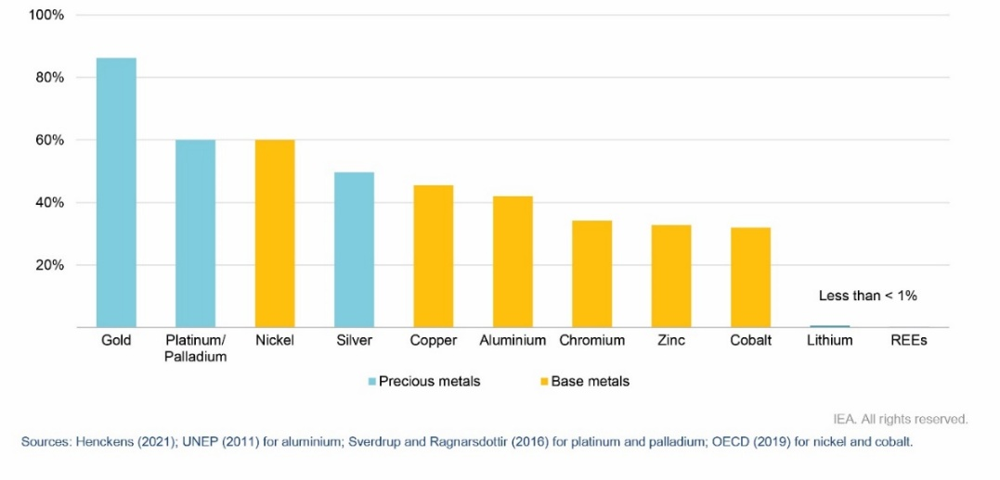
Fig. 31 איור 4.10: אחוז המיחזור של מתכות שונות (לא כולל ברזל). מקור- IEA (2021) IEA ; CC BY 4.0; Reprinted with permission.#
{kind=link}
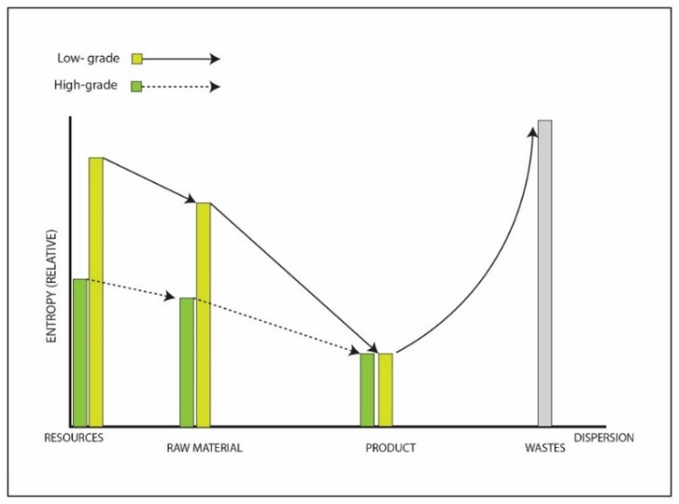
Fig. 32 איור 4.11: שינוי ברמת האנטרופיה בשלבי הייצור השונים. האיור ממחיש את הבזבוז האנרגטי (כפי שהוא מתבטא בשינוי ברמת האנטרופיה) הנובע מתהליך המחזור הנעשה בדרך קונבנציונלית ללא התחשבות בשיקולי מחזור כבר בשלב תכנון המוצר. על פי - (Stumm and Morgan (1981.#
מוצרים פטרו-כימיים#
מוצרים פטרו-כימיים הם חומרים המיוצרים מדלקים פוסיליים, בעיקר נפט וגז טבעי ובנוסף פחם וקרוגן (kerogen)[164] (איור 4.12). לעיתים מוצרים פטרו-כימיים מיוצרים גם משמנים צמחיים.[165] פטרו-כימיקלים כוללים מגוון גדול של חומרים הנחוצים להכנת מוצרים המשמשים אותנו בחיי היומיום (למשל מוצרי פלסטיק), בחקלאות (למשל, דשנים) ובתעשייה (איור 4.13).[166] איור 4.13 מראה גם שכשני שליש ממוצרי הפלסטיק הם לייצור אריזות, אביזרי בנייה וטקסטיל. כיום קרוב לעשירית מהצריכה העולמית של דלק נוזלי וגז טבעי היא עבור חומרי גלם למוצרים פטרו-כימיים (איור 4.14), וייצורם פולט כ-1.5 גיגה-טון פד“ח (מצריכת האנרגיה וחומרי הגלם ביחד), פחות מתעשיית הפלדה והבטון שתוארו קודם (איור 4.4). אולם התעשייה הפטרו-כימית יוצרת מפגע סביבתי נוסף המתחרה בגזי החממה מבחינת הנזק שהוא גורם – פסולת פלסטיק.[167]
פלסטיק, וכן מרבית הפטרו-כימיקלים, כולל ה-PFAS שיידונו בהמשך הפרק, מהווה חלק מקבוצת חומרים הנקראים ”חומרים חדשים“ ((novel entities שהם חומרים שאינם נמצאים בטבע והחברה האנושית מייצרת וצורכת אותם בכמויות הולכות וגדלות ופולטת אותם לסביבה (איור 4.15).[168] לפטרו-כימיקלים רבים יש זמן התכלות ארוך מאד (מאות שנים בממוצע) ובנוסף הם חומרים רעילים, החשודים לעיתים גם כקרצינוגניים (גורמי סרטן). לכן סוכנויות הסביבה השונות מפרסמות נתונים על התרכובות הנפוצות ביותר בסביבה.
צמיגי מכוניות הם דוגמא למוצר פטרו-כימי המהווה מטרד סביבתי משמעותי. צמיגים מיוצרים משילוב של גומי טבעי (המופק מצמחים) וגומי סינטטי המיוצר מדלק (כ-20 ליטר דלק לכל צמיג). לתערובת הגומי הנ“ל מוסיפים מאות רכיבים שונים כגון גופרית (בתהליך ה“גיפור“של גומי), פלדה ומתכות אחרות (נחושת, קדמיום, עופרת, אבץ), סיבים, וכן תרכובות אורגניות שונות, כולל תרכובות נוגדות חמצון שחלקן ידועות כרעילות.[169] לכן שחיקת צמיגים הגורמת לפיזור חלקיקי צמיגים בסביבה מטרידה במיוחד משום שצמיגים מכילים תרכובות רעילות לבני אדם ולאורגניזמים אחרים.[170]
ישנן הערכות ששחיקת צמיגים תורמת 5-10% מכלל החלקיקים המרחפים (PM\(_{2.5}\))[171] באוויר בסביבה העירונית,[172] ומהווה מקור עיקרי לננו-חלקיקים (קטנים מ-1 מיקרומטר)[173] אטמוספריים באזורים הררים כמו האלפים.[174] ישנן גם הערכות ששחיקה של צמיגים תורמת כמעט 80% מחלקיקי המיקרו-פלסטיק (קטנים מ-5 מ“מ) הנשטפים לאוקיינוסים.[175] יתרה מזאת, ככל שמכוניות פולטות פחות זיהום מהמפלט (ובעיקר מכוניות חשמליות) התרומה של שחיקת צמיגים (ובלמים) מהווה מקור מרכזי יותר, עד כדי כך שבניסוי שנעשה לאחרונה התגלה ששחיקת צמיגים תורמת כמעט פי 2,000 יותר חלקיקים מרחפים לאוויר לעומת המפלט.[176] זהו ממצא מטריד מאד משום שחלקיקים מרחפים באוויר הם המקור העיקרי לתחלואה ותמותה מזיהום אוויר (ראו פרק 11).
לאור כל זאת, ברור שתעשיית הצמיגים חייבת לעבור שינוי מהותי הן בבחירת חומרי הגלם, בעיקר הימנעות מחומרים רעילים (עופרת, קדמיום, תרכובות אורגניות נוגדות חמצון, ועוד), וכן בשיפור תהליכי הייצור והמחזור.[177] תהליך המחזור של צמיגים נתקל כיום בקשיים מרובים,[178] ועקב כך צמיגים משומשים מהווים מטרד סביבתי בארצות רבות. לאחרונה התפרסם מאמר סקירה המציג את ההתפתחויות והאתגרים במציאת תחליפים לפטרו-כימיקלים כחומרי גלם לצמיגים.[179] מדובר בעיקר בחומרים שמקורם בצומח (למשל גומי טבעי שמופק באופן בר קיימא).[180] זאת למרות העובדה שמעבר כזה עלול לגרום לבעיות שדנו בהם בפרק 2, כאשר מפנים תוצרי חקלאות למטרות שאינן גידול מזון.
{kind=link}
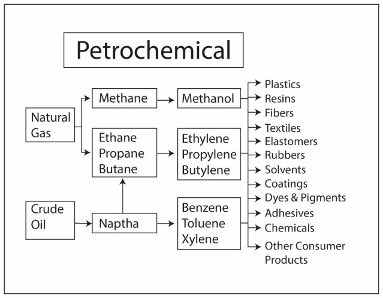
Fig. 33 איור 4.12: תיאור סכמתי של ייצור פטרו-כימיקלים מגז ונפט גולמי ושל המוצרים המכילים אותם. על פי – bpf.co.uk .#
{kind=link}
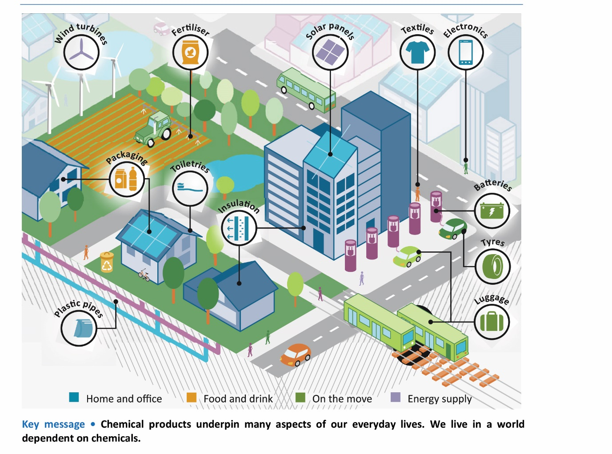
Fig. 34 איור 4.13: (א) השימושים הנפוצים של פטרו-כימיקלים בחברה המודרנית: אלקטרוניקה, טקסטיל, פנלים סולארים, טורבינות רוח, דשנים, סוללות, צמיגים, מכלים, חומרי בידוד, צנרת, חומרי ניקוי ואריזה. (ב) הפילוח של צריכת פלסטיק על ידי ענפי המשק השונים (איור שמאלי) והשכיחות של סוגי פלסטיק שונים הנצרכים כיום (איור ימני). PP&A = Polyester, polyamide and acrylic; LDPE = low-density polyethylene; HDPE = high-density polyethylene; PP = polypropylene; PS = polystyrene; PVC = polyvinyl chloride; PET = polyethylene terephthalate; PUR = polyurethane מקור – IEA (2018) IEA; CC BY 4.0; Reprinted with permission. א#
PP&A = Polyester, polyamide and acrylic; LDPE = low-density polyethylene; HDPE = high-density polyethylene; PP = polypropylene; PS = polystyrene; PVC = polyvinyl chloride; PET = polyethylene terephthalate; PUR = polyurethane
מקור –
IEA (2018) https://www.iea.org/reports/the-future-of-petrochemicals; CC BY 4.0; Reprinted with permission.
א

ב

{kind=link}
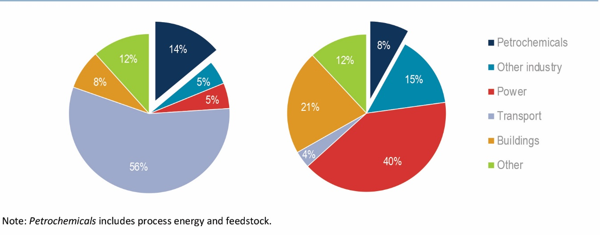
Fig. 35 איור 4.14: התפלגות השימוש בגז טבעי - מתאן (ימין) ונפט (שמאל) בייצור פטרו-כימיקלים, בענפי תעשיה אחרים, בתחבורה, עבור ייצור אנרגיה (בעיקר חשמל) וכן בניה ותחזוקת בניינים. מקור - IEA (2018) IEA ; CC BY 4.0; Reprinted with permission.#
{kind=link}
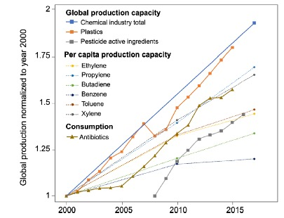
Fig. 36 איור 4.15: מגמות בייצור וצריכה עולמיים של ”חומרים חדשים“ (novel entities). מקור – Persson et al. (2022) - https://doi.org/10.1021/acs.est.1c04158. Reprinted with permission.#
ייצור דשנים – תהליך הבר-בוש#
מבחינת הכמות, מוצרי פלסטיק ודשנים עשירי חנקן (מבוססי אמוניה) הם המוצרים העיקריים שמכינים מפטרו-כימיקלים. אמוניה (\(\ce{NH3}\)) מיוצרת בתהליך הבר-בוש (Haber-Bosch) באמצעות ריאקציה בין מתאן, מים וחנקן אטמוספרי והיא חומר גלם מרכזי ביצור דשנים עשירי חנקן (טבלה 4.1, ראו גם פרק 2). ייצור אמוניה אחראי על כ-3% מכמות הפד“ח הנפלט לאטמוספרה.[181] כבר שנים רבות נעשים מאמצים לייעל את התהליך, ומידי פעם ישנן פריצות דרך.[182] למשל, ב-2025 התפרסם מאמר המציע אלטרנטיבה מעניינת לתהליך הבר-בוש על ידי ייצור אמוניה ממי שפכים בתהליך פוטוכימי.[183] למרות שמדובר ברעיון מעניין ואפילו מלהיב, נותר לראות האם ניתן יהיה ליישם אותו בקנה מידה גדול.
{kind=link}
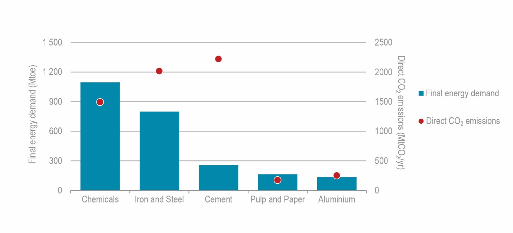
Fig. 37 טבלה 4.1: תהליך הבר-בוש. Haber-Bosch process: (1) H2 production: (a) CH4 + H2O → CO + 3H2 (after removing S impurities from methane (CH4)), and (b) CO + H2O → CO2 + H2 (2) Ammonia production: 3H2 + N2 → 2NH3 - Using iron catalyst at 400 – 500°C and pressures above 100 bar with recycling of the unconverted part of the synthesis gas and separating the ammonia product under high pressure. Since the 1990s a ruthenium (Ru)-based catalyst was introduced which allows slightly lower synthesis pressure and is used in a few world-size plants.#
Haber-Bosch process:[184]
(1) \(\ce{H2}\) production: (a) \(\ce{CH4}\) + \(\ce{H2O}\) → CO + 3\(\ce{H2}\) (after removing S impurities from methane (\(\ce{CH4}\))), and
(b) CO + \(\ce{H2O}\) → \(\ce{CO2}\) + \(\ce{H2}\)
(2) Ammonia production: 3\(\ce{H2}\) + \(\ce{N2}\) → 2\(\ce{NH3}\) - Using iron catalyst at 400 – 500°C and pressures above 100 bar with recycling of the unconverted part of the synthesis gas and separating the ammonia product under high pressure. Since the 1990s a ruthenium (Ru)[185]-based catalyst was introduced which allows slightly lower synthesis pressure and is used in a few world-size plants.[186]
(3) production of fertilizers (e.g., ammonium nitrate, urea)
פלסטיק בסביבה#
דלקים פוסיליים (בעיקר נפט וגז אך גם פחם) מהווים כאמור חומר גלם גם לייצור פלסטיק, כאשר ייצור הפלסטיק מתבצע באופן הבא:[187]
1. זיקוק נפט גולמי והפרדתו למקטעים (פרקציות) בהתאם לאורך שרשרות פחמנים, כאשר האורך משפיע על טמפרטורת האידוי, וכך מתאפשרת הפרדה באמצעות זיקוק. נפתא ותרכובות גז טבעי (בעיקר - ethane, propane or butane) הם המקטעים העיקריים המשמשים לייצור.
2. פרוק המקטעים השונים ויצירת חומרי המוצא לסוגי פלסטיק שונים (שרשראות של פחמן בעלות קשר כפול המאפשר יצירת פולימרים) באמצעות:
Steam cracking - high temperature and pressure to break the hydrocarbons long chains without a catalyst.
Catalytic cracking - using catalysts that allow the process to occur at lower temperatures and pressures.
יצירת פולימרים (שרשראות ארוכות המורכבות מיחידות חוזרות הקשורות ביניהן – למשל, polyethylene, polypropylene) באמצעות:
3. פולימריזציה של הוספה (Addition polymerization)
4. פולימריזציה של דחיסה (Condensation polymerization)
בשתי שיטות הפולימריזציה נפוץ השימוש בזרזים (קטליזטורים) שרובם עשויים ממתכות שונות. כפי שהראינו באיור 4.3, קצב הגידול של ייצור פלסטיק וצריכתו הוא המהיר ביותר מכל חומרי הגלם, והוא מהיר אף יותר מהגידול בתמ“ג. יצור משמעותי של פלסטיק החל בשנות החמישים של המאה העשרים (כ-2 מיליון טון בשנה) והגיע ל-380 מיליון טון בשנה ב-2015. הצפי לפי דוח של ה-IEA מ-2018 הוא שעקב העלייה הצפויה ברמת החיים ובמספר בני האדם, קצב הגידול כנראה ישמר (איור 4.16), כאשר ההערכה היא שעד 2050 ייוצרו במצטבר כ-30 גיגה-טון של פלסטיק.[189] כבר היום ישנם אזורים בעולם בהם יותר דלקים פוסיליים מנוצלים לייצור פלסטיק מאשר להנעת מכוניות והמגמה תגבר עם המעבר לרכבים חשמליים. מה שמחריף את הנזק הסביבתי של פלסטיק היא העובדה שלחלק ניכר ממוצרי הפלסטיק מכניסים בשלב הייצור תרכובות רעילות (ראו בהמשך).
שחרור פלסטיק אל הסביבה#
בערך 98% מהפלסטיק מיוצר כיום מדלקים פוסיליים ורק 2% מיוצרים מפלסטיק ממוחזר. כ-40% ממוצרי הפלסטיק נשלחים למטמנות לאחר שימוש, כ-14% מנוצלים להפקת אנרגיה (השבת אנרגיה), 14% נשלחים למחזור (ורק 2% ממוחזרים), ו-32% זולגים אל הסביבה.[190] הדוח של ה-IEA מ-2018 ומחקרים רבים אחרים מצביעים על היקף ומאפייני הזליגה של פלסטיק אל הסביבה הימית והיבשתית.[191] חלק ניכר מהפלסטיק מגיע לסביבה מאתרי הטמנה, בעיקר כאלה שאינם מנוהלים כראוי. אסונות טבע, כמו רעידות אדמה וצונמי, גורמים לשחרור מוגבר של פסולת, כולל פלסטיק, הן בגלל פגיעה במטמנות[192] והן בגלל שימוש מוגבר במוצרי פלסטיק באזורי אסון ללא הקפדה על איסוף ומחזור. חפצי פלסטיק שאינם מטופלים (מחזור, שריפה או הטמנה) נישאים ברוח, נשטפים עם מי השטח (כולל נהרות) מחלחלים למי תהום, מוסעים לאגמים ולאוקיינוסים ומצטברים בקרקעות ובסדימנטים. בדרכם חלק קטן מתאדה, ורובם מתפרקים,[193] נשחקים מכאנית והופכים בהדרגה לחלקיקים קטנים,[194] כאשר סוגים מסוימים נשחקים מהר יותר ומייצרים יותר חלקיקי פלסטיק קטנים.[195] תהליכי הפרוק יכולים להיות פוטוכימיים (מושרי אור)[196] או ללא נוכחות אור, והם מלווים בשחרור של מרכיבים מסיסים למים (leaching).
כ-19-23 מיליון טון של מוצרי ושברי פלסטיק נכנסים לאוקיינוסים ולגופי מים יבשתיים מידי שנה, אולם קיימת חוסר וודאות גדולה לגבי המספר האמיתי.[197] ניתן להדגים את חוסר וודאות הזאת כאשר משווים מחקרים שונים שניסו להעריך את כמות בפלסטיק הנכנסת רק לאוקיינוסים. ההערכות נעות בין כ-10 מיליון טון פלסטיק[198] לערך נמוך בהרבה של כחצי מיליון טון פלסטיק.[199] בשנת 2026 התפרסם מאמר שהעריך שכמות הפלסטיק שהגיעה לאוקיינוסים מאזורי החוף בשנת 2019 היתה בין 15 ל-60 אלף טון, לא כולל הובלת פלסטיק באמצעות נהרות, דרך האטמוספרה או מכלי שייט. בכל מקרה, בגלל האיטיות היחסית בה פלסטיק מתפרק או נקבר בסדימנט הן בים והן ביבשה יש לו זמן שהות של מאות שנים. לכן, יש משמעות לנטל המצטבר של פלסטיק, שכן פלסטיק שנפלט לפני שנים עדין נמצא בסביבה הימית.[200] כמו כן, יש חשש שכמויות גדולות של חלקיקי פלסטיק שנלכדו בקרח ימי ויבשתי ישתחררו ויגיעו אל הים ככל שכדור הארץ יתחמם.[201] סיכום מצב זה מופיע באיור 4.17.
כפי שנאמר לעיל בדרכם לאוקיינוס חפצי פלסטיק עוברים בליה. כאשר החלקיקים הללו מגיעים לגודל של פחות מ-5 מ“מ, הם נקראים כאמור מיקרו-פלסטיק,[202] וכאשר גודלם יורד מתחת למיקרומטר, הם נקראים ננו-פלסטיק. יש ויכוח בספרות המקצועית לגבי הגדרות הגודל הללו, אולם ההבדלים אינם דרמטיים. מצד שני, ברור שככל שחלקיקים קטנים יותר הם ניידים יותר ויש להם יכולת גדולה יותר לחדור לאברים חיוניים בגוף. לכן יש להתייחס למיקרו-פלסטיק ולננו-פלסטיק בנפרד מבחינת נזקם הצפוי וקביעת תקנים לחשיפה.[203] חלקיקי מיקרו- וננו-פלסטיק מגיעים לסביבות הנידחות ביותר בכדור הארץ, באוקיינוסים, באטמוספרה וביבשות.[204] כפי שצוין קודם, שחיקת צמיגי מכוניות היא מרכיב חשוב במאזן של חלקיקי מיקרו-פלסטיק המשתחררים לסביבה. באוקיינוס נישאים חלקיקי מיקרו- וננו-פלסטיק וכן שברי מאקרו-פלסטיק באמצעות זרמי שטח ומתרכזים במספר אזורים שבהם הזרמים נחלשים. נרחיב על נתיבי תנועתם והנזקים של חלקיקי הפלסטיק באוקיינוסים בפרק 10. חלקיקי פלסטיק נפוצים ביותר גם באגמים ובמאגרי מים.[205] בכל 38 האגמים שנבדקו במחקר נמצאו חלקיקי פלסטיק גדולים מ-0.25 מ“מ.
אין הערכות כמותיות לגבי כניסת פלסטיק למערכות אקולוגיות יבשתיות, אולם ברור שגם פה מדובר בכמויות גדולות מאד ושגם כאן תהליכי ההובלה מלווים בבליה של חפצי פלסטיק ויצירת חלקיקי מיקרו- וננו-פלסטיק. יש גם עדויות לכך שחלקיקי פלסטיק בלויים הנמצאים בקרקע סופחים אליהם מינרלים ויוצרים סביבה לשקיעת מינרלים (תחמוצות ברזל, אלומינו-סיליקטים וקרבונטים) מה שעלול להאט את קצב הבליה של הפלסטיק.[206] בזמן התנועה במים, פני השטח של חלקיקי ננו-פלסטיק מתכסים במולקולות אורגניות מסוגים שונים המשפיעות על תכונותיהם ולעיתים מאפשרות להתחקות אחר מקורם (eco-corona).[207] יש עדיין ויכוח בספרות המקצועית לגבי האפשרות שחלקיקי פלסטיק מהווים מצע עליו נישאים חומרים, למשל PFAS, שעבורם מיקרו-פלסטיק הוא גם מקור אפשרי,[208] וכן מיקרואורגניזמים רעילים.
הנזק הבריאותי והסביבתי של פלסטיק#
בשנים האחרונות מצטברות עדויות לכך שהרבה חלקיקי מיקרו- וננו-פלסטיק נכנסים דרך המזון, מי שתיה (בעיקר כאשר שותים מבקבוקי פלסטיק)[209] או מערכת הנשימה לאברים פנימיים של בני אדם[210] וחיות מסוגים שונים[211] ושהם מעורבים בשינויים מטאבוליים.[212] פוגעים במערכת לב-ריאה,[213] עיכול,[214] רבייה,[215] נשימה[216] ואף מגיעים למוח ואולי משפיעים על תפקודו.[217] יש גם עדויות חד משמעיות על נזק שגורמים חפצי פלסטיק גדולים הלוכדים, חונקים, או מפריעים לתנועה של בעלי חיים ימיים ויבשתיים.[218]
לאחרונה דווח שחלקיקי פלסטיק מתכלה (biodegradable)[219] שעברו בליה פוגעים יותר במערכת העצבים של חיות מודל בהשוואה לחלקיקים טריים.[220] בנוסף לכל זה, כחלק מתהליך ייצור הפלסטיק מכניסים בשלב הייצור תרכובות שמטרתן לשפר את תכונות המוצר ואשר חלקן רעילות.[221] למשל, נאספו כבר עדויות שתוספים נפוצים כמו Bisphenol A (BPA),[222] di-ethylhexyl phthalate (DEHP), ו-benzyl butyl phthalate (BBP) [223]גורמים לפגיעות בריאותיות בבני אדם (IHD, preterm birth - ischemic heart disease, IQ loss)[224] ובבעלי חיים בזמן השימוש ויותר מכך בזמן שהפלסטיק מתפרק בסביבה.[225] ישנן עדויות לכך שחלקיקי מיקרו- וננו-פלסטיק משתחררים גם בסביבה הביתית (פוליאתילן יותר מאשר פוליפרופילן), בעיקר עקב שימוש במיקרו-גל והם עלולים לפגוע בעיקר בתינוקות וילדים קטנים.[226]
פתרונות מוצעים לבעיית זיהום הפלסטיק#
הפתרון לבעיית הפלסטיק טמון בקידום מדיניות שתוביל להפחתת הצריכה, ייצור בר-קיימא, שיפור מנגנוני פירוק והגדלת המחזור, מבצעי ניקוי (פירוט בהמשך),[227] והפיכת הפלסטיק לדלק.[228] על מנת שפתרונות אלה יצליחו להתמודד עם העלייה בכמות הפסולת הגדלה עקב עליה ברמת החיים וגידול האוכלוסייה, יש צורך ב: (1) פיתוח מנגנון לסינון של כימיקלים המוספים לפלסטיק ושל סוגי פלסטיק שונים על פי סכנת המפגע שלהם (hazard-based), ואז התמקדות בחומרים המסוכנים ביותר ושלא נמצא להם תחליף בייצור פלסטיק;[229] (2) איתור מקורות השחרור של סוגי הפלסטיק השונים, למשל מאקרו-פלסטיק[230] מול מיקרו-פלסטיק המובלים בנהרות בדרכם לאגמים ולים;[231] ו-(3) פיתוח טכנולוגיות לסילוק פלסטיק הנמצא כבר בסביבה. מדובר בטכנולוגיות שרובן נמצאות בשלבי מחקר ופיתוח ועדין אינן ישימות בקנה מידה גדול, כמו למשל פירוק פלסטיק מסוגים שונים על ידי אורגניזמים,[232] או אנזימים מסונתזים.[233] במקביל יש לקדם שריפת פלסטיק (השבת אנרגיה) תוך כדי סילוק פד“ח (– CCS פרק 3).[234] חשוב גם לציין שהפתרון לבעיית הפלסטיק צריך להיות מותאם למטרות הפיתוח בר הקיימא של האו“ם (CTS - Clean Technology Scenario).[235] למשל, יש לקחת בחשבון את הטענה שבחלק משימושי הפלסטיק (אריזה, בניה, טקסטיל האחראיים על כשני שליש מצריכת הפלסטיק, איור 4.13) הוא עדיף על פני התחליפים שלו, לפחות מבחינת פליטות גזי חממה.[236]
במקביל, מושקע מאמץ גדול בהליכי ייצור ושימוש בר קיימה של פלסטיק. במסגרת זאת נעשים מאמצים בכמה כיוונים: יצור פלסטיק מתכלה (bio-degradable)[237] וכזה שאינו מתפרק לחלקיקים של מיקרו- וננו-פלסטיק;[238] תכנון מוצרי פלסטיק הנוחים יותר למחזור; פיתוח שיטות מחזור חדשות שמטרתן לקדם את עקרונות הכלכלה המעגלית בתעשיית פלסטיק;[239] שימוש בפלסטיק ממוחזר במתקני תשתית (למשל, אספלט של כבישים);[240] גיבוש הסכמים בין מדינתיים ותוך מדינתיים לגבי ייצור, שימוש ומחזור פלסטיק[241] עם דגש על מאמצי מחזור ברמה המקומית והעירונית;[242] והפסקת ייצור ושימוש בפלסטיק חד-פעמי.[243]
המעבר מפחם לגז כמקור אנרגיה (שלא לדבר על מעבר לאנרגיות מתחדשות – ראו בהמשך) ושימוש בזרזים (קטליזטורים) מסוגים חדשים,[244] יכולים לסייע בהפחתת הפסולת של התעשייה הפטרו-כימית.[245] כיום נעשה מאמץ להחליף דלקים פוסיליים עם ביו-דלקים כחומר גלם לפטרו-כימיקלים וליצור מהם אמוניה ואלכוהולים קצרים (מתנול, אתנול) ומהם לייצר אתילן, פרופילן ותרכובות ארומטיות (BTX). חשוב לזכור שגם לשימוש בביו-דלקים יש מחיר סביבתי ניכר כפי שהראנו בפרקים 2 ו-3. כמו כן, בתעשייה הפטרו-כימית מחפשים תחליפים לייצור מימן, המיוצר כיום בעיקר בריאקציה של מתאן עם מים. הגישה הנפוצה ביותר היא אלקטרוליזה של מים באמצעות חשמל המופק מאנרגיות מתחדשות. הדוח של ה-IEA מ-2018 מפרט 10 המלצות הנוגעות לייצור, שימוש וסילוק של תוצרי התעשייה הפטרו-כימית.[246] המלצות דומות מופיעות במספר גדול של עבודות מחקר שהתפרסמו בשנים האחרונות.[247]
במקביל, מושקעים מאמצים במציאת זנים של פטריות,[248] בקטריות[249] ומיקרואורגניזמים[250] אחרים המסוגלים לפרק כליל את הפלסטיק (עד כה התגלו מעל 400 זנים שונים).[251] בעיית הפלסטיק העולמית היא גם ביטוי לחוסר-צדק חברתי וכלכלי, וכל פתרון לבעיה זאת צריך להיות מלווה בהפסקת הייצוא של פסולת פלסטיק ממדינות עשירות למדינות מתפתחות.[252]
במשך השנים נחתמו מספר אמנות והתקיימו כנסים בינלאומיים רבים בנושא הפלסטיק והשפעתו הסביבתית במטרה להסדיר את הנושאים שהוזכרו לעיל. הכנס האחרון שבהם התקיים בניירובי ב-2022.[253] מאז הכנס יש פעילות מדעית ופוליטית ענפה על מנת לקדם את פתרון משבר הפלסטיק העולמי,[254] אולם עם הצלחה חלקית ביותר.[255] יש גם הקוראים להגדיר פלסטיק כחומר עמיד, מצטבר במארג המזון ורעיל (ראו בהמשך – PBT).[256] בין ההישגים הבודדים עד כה, ראוי לציין אתר אינטרנט המאפשר לגורמים העוסקים בנושא לשקול את הפתרונות המוצעים מבחינת תרומתם להפחתת כמות הפלסטיק המשתחררת לסביבה (mismanaged - ~22% of produced plastic) ולפליטות פד“ח לאטמוספרה.[257]
מחזור פלסטיק כחלק מהפתרון של בעיית הפלסטיק#
ההערכה היא שמכל 100 טון של פלסטיק שמיוצרים כיום, רק שני טון מגיעים מחומר ממוחזר, כשמונה מיליון טון של פלסטיק מעובדים (בעיקר בשיטות מכניות) לחומר גלם עבור מוצרים אחרים ו-14 מיליון מנוצלים להשבת אנרגיה, שזאת בעצם שריפה של דלקים פוסיליים, על כל המשמעות של שחרור פד“ח ומזהמים אחרים לאטמוספרה. ישנה שונות גדולה במידת המחזור בין מדינות שונות. במדינות האיחוד האירופי למשל, החל מ-2016 יותר פלסטיק מוחזר מאשר הוטמן (איור 4.18). בעוד שבאיחוד האירופי ובסין כ-30% מהפלסטיק ממוחזר, בארצות הברית רק כ-10% ממוחזרים.[258] האתגר הגדול הוא להגיע למצב של מחזור משמעותי בשאר מדינות העולם (כולל ישראל), בעיקר בגלל התלות הגדולה שבין רמת חיים וצריכת פלסטיק (איור 4.19), המנבאת עליה בצריכת פלסטיק בעתיד.
עד 2016 סין ייבאה כמויות גדולות של פסולת פלסטיק ומחזרה או שרפה אותה, אולם בשנים האחרונות היא הפחיתה בצורה דרמטית את הייבוא הזה. השינוי במדיניות של סין חייב טיפול בבעיית מחזור הפלסטיק והתמודדות עם פסולת הפלסטיק במדינות רבות שהיו רגילות לייצא פסולת פלסטיק לסין.[259] בשנת 2025 פורסם מחקר מקיף שבחן את מחזור הפלסטיק בעולם בשנת 2022 במהלכה יוצרו כ-400 מיליון טון פלסטיק והיו כ-270 מיליון טון של פסולת פלסטיק מתוכם ניתן לעקוב אחר כ-260 מיליון טון.[260] מתוך הכמות הזאת כ-15% עברו מחזור (אחוז שנותר קבוע בשנים האחרונות), אולם היתה עליה משמעותית באחוז הפלסטיק המשמש להשבת אנרגיה (כ-35%). למרות זאת אחוז ההטמנה נותר יחסית גבוה (כ-40%). היתרה (כ-11%) לא טופלה. כמו כן, היתה פחות העברה של פסולת פלסטיק מארצות עשירות לעניות.
אחד האתגרים הגדולים לגבי מחזור פלסטיק נובע מכך שלהרבה סוגי פלסטיק נפוצים מוסיפים מגוון כימיקלים[261] שחלקם, כפי שצוין קודם, רעילים ביותר (למשל N-ethyl-o-Toluesulfonamide),[262] וכן שפלסטיק המוגדר כמתכלה לעיתים אינו עדיף על פלסטיק רגיל.[263] על מנת שיהיה אפשר למחזר פלסטיק בצורה בטוחה, יש להפסיק את השימוש בחלק ניכר מהתרכובות הרעילות הללו ולעשות זאת באמצעות רגולציה. פתרון לבעיית בפלסטיק מחייב שילוב של מספר אמצעים. בראש ובראשונה יש להפחית את יצור הפלסטיק מדלקים פוסיליים. יש להגביר את המחזור ולפתח שיטות לפרוק פלסטיק. יש להשתמש בפלסטיק להשבת אנרגיה תוך התגברות על בעיית ההטרוגניות שלו[264] ותוך כדי לכידת מזהמים (למשל כלור) [265] ופד“ח וכן יש להרבות במבצעי ניקוי של פלסטיק הנמצא כבר בסביבה.[266]
כמו בתחומים אחרים (עישון, התחממות גלובלית), קיים חשש שחברות דלקים פוסיליים מנסות לעודד צריכת פלסטיק באמצעות קידום מחקר המחזק את ההערכות שניתן למחזר פלסטיק ואף קיים חשד שחברות ייצור פלסטיק הפריזו במכוון בפוטנציאל המחזור של פלסטיק.[267] במקרים רבים הבעיה היא בתווית המחיר, כאשר תהליך המחזור יקר יותר מייצור פלסטיק מדלקים פוסיליים. מצב זה הוא בר-תיקון באמצעות מיסוי הלוקח בחשבון ”השפעות סביבתיות חיצוניות“ (environmental externalities) של ייצור פלסטיק מדלקים פוסיליים לעומת יצור פלסטיק מפלסטיק משומש, בדומה למה שנכתב בתת-הפרק על מתכות.
{kind=link}
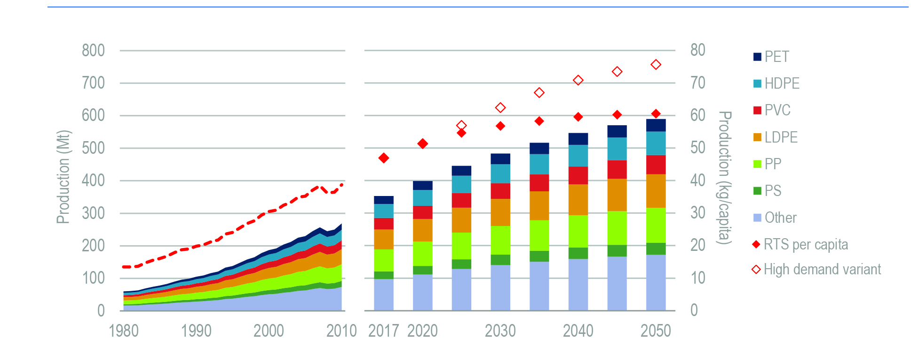
Fig. 38 איור 4.16: ייצור פלסטיק וסוגיו החל מ-1980 ועד 2050. RTS = Reference Technology Scenario (business as usual) vs. CTS = Clean Technology Scenario. (LDPE = low-density polyethylene; HDPE = high-density polyethylene; PP = polypropylene; PS = polystyrene; PVC = polyvinyl chloride; PET = polyethylene terephthalate). מקור – IEA (2018); CC BY 4.0; Reprinted with permission.#
{kind=link}
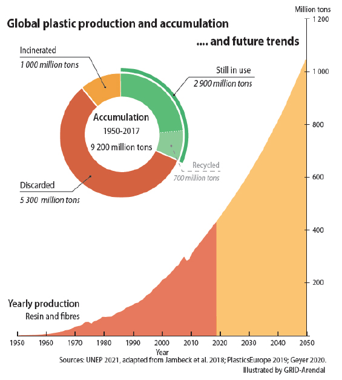
Fig. 39 איור 4.17: ייצור והצטברות פלסטיק מאז 1950, כולל תחזית עד 2050. מקור - United Nations Environment Programme (2021) https://doi.org/10.1038/s41586-024-07758-6. © Reprinted with permission.#
{kind=link}
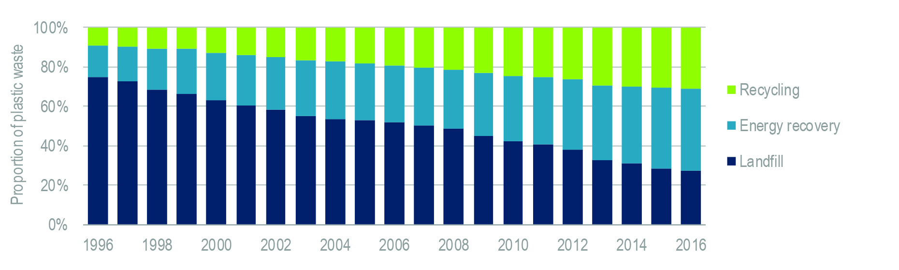
Fig. 40 איור 4.18: התפלגות הטיפול בפלסטיק בין שיטות הטיפול השונות באיחוד האירופי. מקור – IEA (2018) IEA ; CC BY 4.0; Reprinted with permission.#
{kind=link}
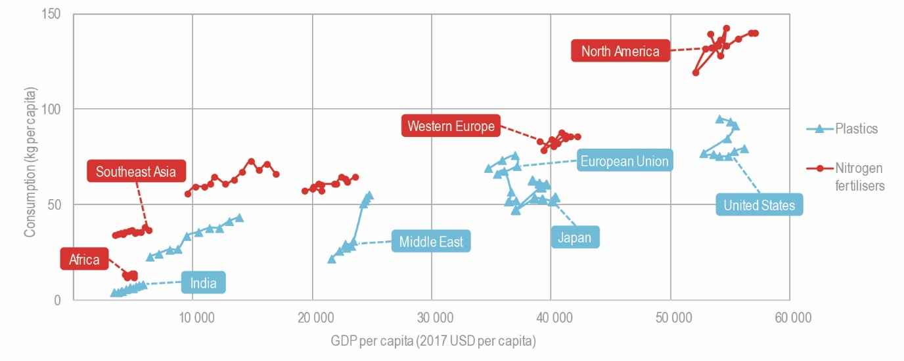
Fig. 41 איור 4.19: צריכה לגולגולת של מוצרי פלסטיק ודשן חקלאי כפונקציה של רמת החיים (תמ“ג לנפש). מקור - IEA (2018) IEA ; CC BY 4.0; Reprinted with permission.#
פר-פלואורו-אלקיליות ופולי-פלואורו-אלקיליות (PFAS: per- and poly-fluoro-alkyl substances)#
ההתמקדות בתרכובות ה-PFAS נובעת מכך שב-PFAS מתקיים שילוב של מספר תכונות ההופכות אותן למטרד סביבתי חמור ביותר וההכרה בכך צוברת תאוצה בשנים האחרונות.[268] בראש ובראשונה, PFAS הם חומרים אורגניים יציבים[269] (persistent organic pollutants - POP)[270] המצטברים בסביבה וחודרים למערכות ביולוגיות ולכן הם נקראים בספרות המקצועית forever chemicals (איור 4.20).[271] בנוסף, יש מידע מבוסס שחלק מתרכובות PFAS גורמות לנזק בריאותי,[272] כולל האפשרות שהן גורמות לסרטן.[273]
מאפייני ה-PFAS#
ה-PFAS היא קבוצה של אלפי תרכובות המסונתזות מדלקים פוסיליים והן כוללות אטומי פחמן הקושרים אטומי פלואור שהחליפו אטומי מימן.[274] החל משנות הארבעים של המאה הקודמת החלו לייצר PFAS עבור מגוון שימושים: ציפויים של כלי בישול ומוצרים העמידים בפני חום (ציפויי טפלון), חומרים דוחי שמן ומים בבגדים, אריזות מזון ומכלים, סוגי צבע מסוימים, חומרי בידוד חשמלי וחומרים מעכבי בעירה.[275] כיום, מכירים יותר מ-1400 תרכובות PFAS שלהן יש מעל 200 שימושים שונים.[276] אבני דרך במודעות ובניסיונות התמודדות עם הנזק של ה-PFAS ועוד מספר POP מופיעים באיור 4.21.
נקודה מעוררת מחשבה בעניין השימושים ב-PFAS היא הקרבה המבנית-כימית שלהן לתרכובות ה-CFC המשתתפות בהרס שכבת האוזון הסטרטוספרי (ראו פרק 11). בעקבות פרוטוקול מונטריאול[277] הופסק בהדרגה הייצור של תרכובות CFC, והן הוחלפו בתרכובות אחרות דומות במבנה (HCFCs & HFCs)[278], שאינן משתתפות בריאקציות הפוגעות באוזון אך הן גזי חממה (ראו פרק 11). פרוטוקול מונטריאול נחשב לאחת ההצלחות הגדולות של המחקר הסביבתי, אך למרות הצלחתו, במשך הזמן התברר כי חלק מתחליפי ה-CFC מתפרקים עם הזמן לתרכובות PFAS קצרות (short-chain PFAS - scPFAS), בעיקר TFA (Trifluoroacetic acid) שזמן השהות שלהן בסביבה ארוך מאד (הן מוגדרות כ-POP) ולכן הן מצטברות גם באזורים הנידחים ביותר בכדור הארץ.[279] TFA הן תוצרי פירוק של תרכובות PFAS רבות, ולמעשה בהרבה מקרים TFA מהוות קרוב ל-90% מכלל ה-PFAS שנמדדים בדוגמאות מים וקרקע.[280]
זליגת PFAS לסביבה#
חלק ניכר מזליגת PFAS לסביבה נעשה על ידי מי גשם המחלחלים דרך מטמנות פסולת עירונית וביתית (תשטיפי מטמנות).[281] יש גם עדויות לזיהום המגיע ממי שפכים מטופלים כשהטיפול לא מצליח לסלק PFAS,[282] ממפעלי ייצור ומחומרים המכילים PFAS ושעדיין לא הגיעו למטמנות,[283] מקרקעות[284] וכנראה גם מן האוויר.[285] לכן, מקורות החשיפה העיקריים של PFAS הם מי שתייה, מזון, אבק אטמוספרי[286] (PM – ראו פרק 11), חפצים הנמצאים בשימוש יומיומי[287] וכן אתרי מחזור של מוצרי אלקטרוניקה.[288] למרות שיש אלפי סוגים של PFAS, רוב המחקר הסביבתי התמקד בשנים הראשונות בשתי תרכובות:[289] PFOA ו-PFOS, הן בגלל השימושים הרבים שלהן והן בגלל שהן מהוות תוצרי פירוק (מיקרוביאלי וכימי) של תרכובות PFAS אחרות.
בשנים האחרונות נמצאו ריכוזים משמעותיים של תרכובות PFAS בקרקעות ובגידולים חקלאיים,[290] וכן במי שתיה (מאות רבות עד אלפי חלקים לטריליון –PPT),[291] עם ריכוזים גבוהים יותר בשכונות וישובים עניים.[292] כמו כן, התגלו ריכוזים גבוהים של PFAS גם בבני אדם, אם כי יש עדויות למגמת ירידה של חלק מהתרכובות בשנים האחרונות.[293] בישראל נעשו שני סקרים של PFAS במי בארות (ראו פרק 14). סקר שנעשה ב-2023 גילה ריכוזים של PFAS ב-13% מ-322 האתרים שנדגמו בישראל, ובשלושה אתרים הריכוזים היו מעל 100 ננו-גרם לליטר והקידוחים נסגרו.[294]
ריכוזי PFAS בבני אדם ונזקם הבריאותי#
ריכוזי PFAS אצל נבדקים מדנמרק, קנדה, ישראל וגרמניה היו בטווח של מאות עד אלפי PPT, כשהשונות בין הנבדקים (ערכי חציון) מהארצות השונות היתה לכל היותר פי חמש בכל התרכובות שנמדדו.[295] כלומר, גוף האדם (לפחות באנשים מהתרבות המערבית) מכיל ריכוזים משמעותיים של תרכובות ה-PFAS שאין להן שום מקור טבעי (”novel entities“ - הרקע הטבעי הוא אפס), ולכן ברור שאין סף בטוח לחלוטין לחשיפה אליהן.[296] יתרה מזאת, ישנם מחקרים הטוענים שריכוזים מעל 1 PPT הם כבר מסוכנים לבריאות וגורמים לנזקים בריאותיים: עיכוב בהתפתחות תינוקות וילדים, בעיות פריון, עליה בסיכוי לחלות בסוגי סרטן מסוימים, פגיעה במערכת החיסונית, פגיעה במערכת ההורמונלית, רגולציה של כולסטרול והשמנת יתר.[297] זאת תוצאה מדאיגה ביותר, ומשמעותה שיש לקבוע תקנים סביבתיים ל-PFAS בהקדם, כפי שאכן נעשה בשנת 2025,[298] ובמקביל לחפש תחליפים ל-PFAS שיהיו פחות יציבים ויותר מתכלים ולכן לא יצטברו בסביבה ובגוף. יתרה מזאת מחקרים שפורסמו לאחרונה טוענים כי ריכוזי PFAS במקורות מים ובמי שתיה גבוהים מידי ואף חצו את הקו האדום של הגבול הפלנטרי עבור חומרים חדשים (novel entities - ראו איור 1.1 בפרק המבוא).[299]
התמודדות עם בעיית ה-PFAS#
כאמור, רוב המחקר הסביבתי התמקד בשנים הראשונות בשתי תרכובות: PFOA ו-PFOS, אולם לאחרונה החלו תרכובות נוספות לעורר עניין בגלל החשש שהן גורמות לפגיעות בריאותיות רבות,[300] מצטברות במארג המזון,[301] ונמצאות בריכוזים משמעותיים במי שתייה.[302] ממצאים אלה הובילו לקביעה של ריכוזים מרביים מומלצים[303] (ריכוזים מותרים, אך עדין לא תקנים מחייבים),[304] בעיקר במים (שנחשב לאחד מנתיבי החשיפה העיקריים)[305] וגם בקרקע. הבעיה בקביעה של תקנים מחייבים ולא רק מומלצים עבור PFAS במים ובקרקע,[306] נובעת מצד אחד מכך ששיטות המדידה אינן רגישות ואמינות מספיק (למרות שהן משתכללות כל הזמן),[307] ומצד שני מסתבר שחיטוי מי שתייה גורם ליצירה ולשינויים בהרכבן.[308] לאחרונה, עלתה האפשרות שחלק מתרכובות PFAS יכולות לחדור לגוף גם דרך מערכת הנשימה עקב הימצאותן בחלקיקים מרחפים באוויר.[309] כלומר יתכן שבעתיד ייקבעו גם תקנים לריכוזי PFAS מסוימים באוויר. נעשה כיום מאמץ לפתח שיטות מדידה שיאפשרו בעתיד לזהות את מקור ה-PFAS בדוגמאות מים או אוויר[310] וכן לזהות את תוצרי הפירוק החלקי שלהן.[311] אכן, בשנת 2025 ה-EPA קבע לראשונה תקנים מחייבים לכמה תרכובות PFAS.[312]
על מנת לפשט את ההתמודדות עם PFAS נטען לאחרונה כי מבחינה סביבתית יש להתייחס אל ה-PFAS כקבוצה קוהרנטית (גם בקביעת סטנדרטים). זאת על בסיס התכונות הכימיות, הרעילות וההתנהגות בסביבה של מספר גדול של תרכובות שנחקרו עד כה. לאור זאת, יש להתמקד בסכנה הכללית של PFAS ולא בפרטים המבדילים בין תרכובות שונות,[313] להשתמש ב-PFAS רק במוצרים שבהם אין להן כרגע שום תחליף,[314] להימנע משימוש באריזות מזון[315] ולחפש תחליפים בטוחים יותר ל-PFAS ולתרכובות אורגניות אחרות המכילות פלואור.[316] נטען גם שחייבים ולמצוא שיטות חדשות לניטור PFAS במקורות מים ובסביבה,[317] ולפתח שיטות מתאימות לניקוי מי שפכים ואתרי הטמנה מזוהמים.[318] זאת מאחר ושיטות הטיפול הרגילות של מי שפכים כמעט אינן מסלקות PFAS,[319] ואם מי השפכים המטופלים מוזרמים לגופי מים מתוקים, נוצר זיהום של PFAS במי שתיה.[320] בהקשר זה ראוי לציין את אמנת שטוקהולם (אמנה בינלאומית שעליה חתומות 152 מדינות – ראו פרק הנספחים) המוקדשת ל-POP בכלל ול-PFAS בפרט.[321]
חברות המייצרות PFAS (למשל, M3) נתבעו על ידי רשויות מקומיות לאחר שאלה חויבו לטהר את מקורות המים שלהן מ-PFAS. החברות המייצרות PFAS הסכימו לשלם מיליארדי דולרים על מנת ליישב את התביעות.[322] באופן לא מפתיע, לאחרונה התגלה כי חברות כמו M3 ו-DUPONT העלימו מידע על הנזק הבריאותי של PFAS,[323] באופן דומה למה שעשו בשעתו חברות הטבק, ולאחרונה גם חברות הדלקים הפוסיליים (ראו פרק 3). ניסיון העבר מצביע על כך שהנושא מחייב תאום בין מדינות, משום שכאשר הפסיקו לייצר סוגים מסוימים של PFAS בחברות אמריקניות (M3) הוגבר הייצור בסין, הודו ורוסיה.[324] מצד שני, מחקר שנעשה לאחרונה הראה שריכוזי PFOS בביצים של ציפורי ים באזורי החוף של צפון אמריקה התחילו לרדת זמן קצר אחרי שייצורם בצפון אמריקה פסק, והתגלה שזמן מחצית החיים[325] של PFOS בביצי הציפורים הוא 2.6 עד 7.8 שנים, כלומר זמן קצר מהצפוי לתרכובות POP.[326] זמן מחצית חיים דומה דווח עבור PFAS בדוגמאות אוויר שנאספו ברחבי אירופה.[327] יתרה מזאת, בשנת 2026 דווח שריכוזים של מספר תרכובות PFAS בכבד של לוויתנים מהאוקיאנוס הסב-ארקטי היו במגמת ירידה לאחר שהגיעו לשיא בשנת 2011, זאת בעקבות הגבלות שהוטלו על ייצורן.[328] על מנת להתגבר על בעיית זיהום ה-PFAS נעשים כיום הרבה מחקרים הבוחנים שיטות לזירוז קצב הפירוק של PFAS במים[329] ואיתור מיני בקטריות המסוגלות לפרק אותן.[330] בינתיים השיטות הללו נמצאות בשלב המחקרי ויחלפו שנים עד שניתן יהיה ליישם אותן בקנה מידה גדול במתקנים לטיהור מי שתייה או מי שפכים. נעשו גם ניסיונות לפתח מתודולוגיה מבוססת AI המסייעת בתכנון תחליפים ל-PFAS המקובלים כיום, תחליפים בעלי מבנה דומה, אבל פחות רעילים והמתפרקים מהר יותר.[331]
{kind=link}
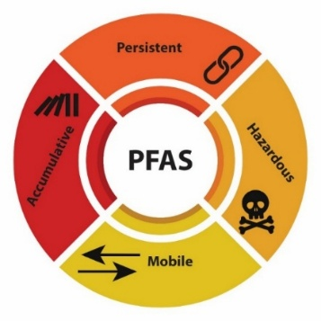
Fig. 42 איור 4.20: מאפייני ה PFAS – רעילות, עמידות בפני פירוק (POP), הצטברות בסביבה ובגוף (POP) וניידות בסביבה.#
{kind=link}
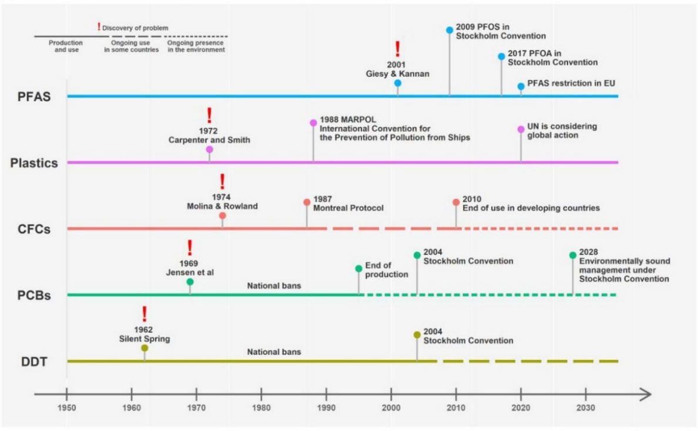
Fig. 43 איור 4.21: אבני דרך בהיסטוריה של המודעות לנזק של מספר POP כולל PFAS. רשימת מאמרי המפתח שהצביעו על הבעיה הסביבתית מצוינת ב-!. שימו לב ל-DDT שהוזכר בפרק המבוא, ל-CFC שהוזכרו למעלה ויופיעו שוב בפרק 11, וכן לעובדה שיש הטוענים שפלסטיק איננו POP. מקור – Scheringer, M. et al. (2022) https://doi.org/10.1021/acs.est.2c06611#
Reprinted with permission. Copyright {2023} American Chemical Society.
תעשיית הטקסטיל – האופנה והבגדים#
בשל קוצר היריעה לא נדון בפירוט בתעשיית הטקסטיל (בעיקר, אך לא רק בגדים). נציין רק שהיא מהווה את אחת הדוגמאות הבוטות ביותר של צרכנות הפוגעת בסביבה.[335] כמו כן תעשיית הטקסטיל (ובעיקר בגדים) נוגעת בכול אחד ואחת מאיתנו באופן ישיר וכמעט יומיומי ומהווה מחד דוגמא טובה להשפעות הסביבתיות של רמת החיים שלנו, ומאידך מדגימה את יכולתנו לעשות שינוי סביבתי במאמץ קטן על ידי שינוי בדפוסי הצריכה שלנו.
נזקים סביבתיים של תעשיית הטקסטיל#
מעל 90 מיליון טון של פסולת בגדים נוצרת מידי שנה, והיא גורמת לבעיית הטמנה חמורה. כמו כן, חלק מהטקסטיל מיוצר מצמחים (בעיקר כותנה) המחייב עיבוד שטחים נרחבים, צורך הרבה אנרגיה (לחריש ולקציר, לטוויה ולאשפרה) ומשתמש בכמויות גדולות של דשנים וחומרי הדברה. תעשיית הטקסטיל צורכת כ-80 מיליארד מטר מעוקב של מים בשנה (2015), כ-2% מכלל צריכת המים העולמית, והיא אחראית על זיהום כ-20% מכמות המים הנצרכת, בעיקר על ידי כימיקלים הקשורים לתהליך הצביעה – צבענים וכן מתהליך הלבנת כותנה. תעשיית הטקסטיל משתמשת בכ-8,000 סוגים שונים של כימיקלים, רובם צבענים, כאשר רוב הצבענים מיוצרים מדלקים פוסיליים וחלקם רעילים או חשודים כרעילים.[336] הבעיה של זיהום מקורות מים מצבענים חמורה במיוחד בארצות כמו סין, וייטנאם, בנגלדש והודו, הארצות בהן נמצאת רוב תעשיית הטקסטיל (טבלה 4.2). יש הטוענים כי תעשיית הטקסטיל אחראית על שחרור כ-35% מסך כל המיקרו-פלסטיק (בעיקר מיקרו-סיבים) בעולם[337] אם כי יש גם דיווחים על הקושי במדידה אמינה של שחרור מיקרו-סיבים מבגדים.[338] תעשיית הטקסטיל אחראית על כ-7% מפליטות הפד“ח של האנושות, יותר מאשר פליטות התחבורה הימית והאווירית ביחד (איור 4.22).[339] אתרי הטמנה של בגדים מהווים בעיה סביבתית ואסתטית הולכת ומחריפה בארצות מתפתחות הקולטות עודפי יצור ובגדים משומשים מארצות המייצרות או צורכות בגדים בכמויות גדולות.[340] לאור זאת, הנזק הסביבתי של תעשיית הטקסטיל מתפרש על תחומים רבים.
חוסר צדק חברתי וסביבתי בתעשיית הטקסטיל#
בדומה לכריית קובלט ומתכות אחרות, חלק משמעותי מתעשיית הטקסטיל מתבסס על ניצול עבודת ילדים. תעשיית הטקסטיל חוטאת גם בניצול מחפיר של עובדים במדינות מתפתחות, בחוסר שקיפות ובפגיעה בצדק סביבתי-חברתי, כאשר אוכלוסיות מוחלשות נחשפות יותר למפגעים. סקירה ודרוג חברות הטקסטיל הגדולות מבחינת צדק חברתי-סביבתי נעשה באופן קבוע ודוחות עם הציונים של חברות טקסטיל מתפרסמים מידי שנה.[341] למשל, בדוח של 2024 אף חברת טקסטיל לא קיבלה ציון מעל 40 (מתוך 150).
בתעשיית הטקסטיל יש גם ביטוי למגבלותיה של הכלכלה המעגלית.[342] בגלל מגוון סיבות מוצרי טקסטיל כמעט ולא עברו מחזור עד לאחרונה (בעיקר בגלל שכל בגד עשוי ממגוון חומרים). בנוסף, דווח שיש זליגה של כמות גדולה של סיבי מיקרו-פלסטיק (microplastic fibers - MPFs) כשממחזרים בגדים העשויים חלקם או כולם מפוליאסטר.[343] לאחרונה חלה התקדמות בשיטות ויוזמות מחזור הטקסטיל,[344] ובחקיקה מעודדת-מחזור.[345] נדמה שאם הנושא יקבל את תשומת הלב הראויה, יש סיכוי לשיפור באחוז מוצרי הטקסטיל הממוחזרים, ויש הטוענים שניתן יהיה להגיע ל-95% מחזור.[346] כתחליף חלקי למחזור טקסטיל התפתחה תעשייה ענפה של בגדי יד-שנייה. אולם, ככל הנראה במקרים רבים תעשיית בגדי יד-שנייה יצרה יותר בעיות מאשר אלו שהיא פתרה.[347]
לסיום, רובנו מתייחסים לבגדים כאל משהו זול שניתן להחליף לעיתים תכופות ולאחר שימוש מועט. תעשיית הבגדים מהווה אם כן דוגמא למקום שבו הרגלי צריכה, כלומר החלטות של צרכנים, יכולים להשפיע בצורה מרכזית על הכיוון אליו צועדת התעשייה, כאשר הלקח העיקרי של תעשיית האופנה והבגדים מהזווית הסביבתית הוא לצרוך פחות ולהשתמש באותו בגד זמן ארוך ככל שניתן.[348]
{kind=link}
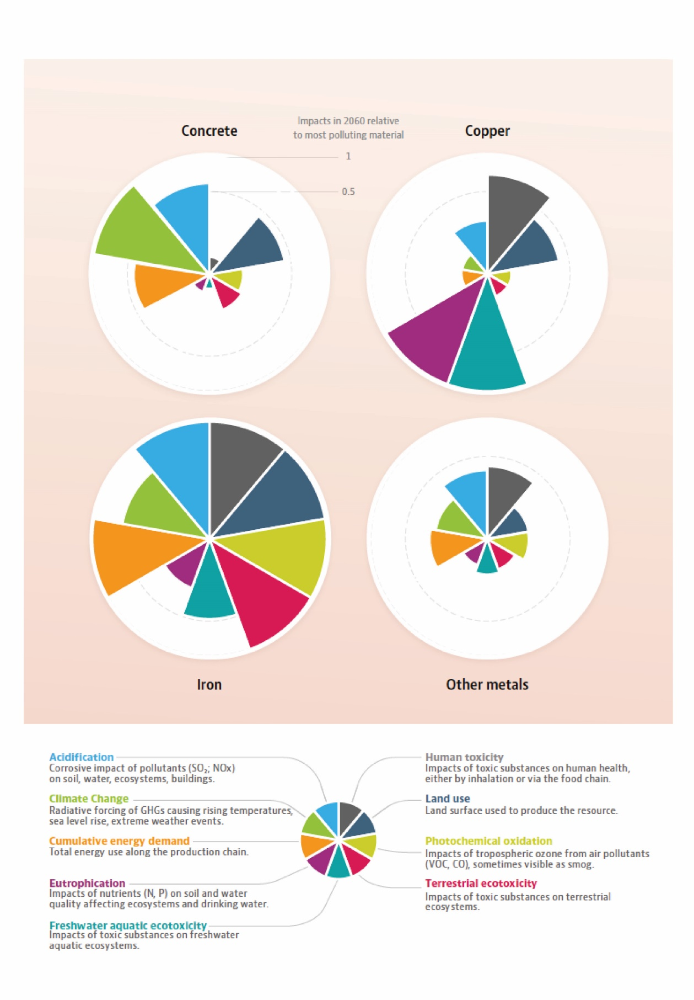
Fig. 44 טבלה 4.2: יצרניות הבגדים העיקריות. מקור – Leal Filho, W. et al. (2022) Frontiers. Reprinted with permission. Copyright {2023} American Chemical Society.#
{kind=link}
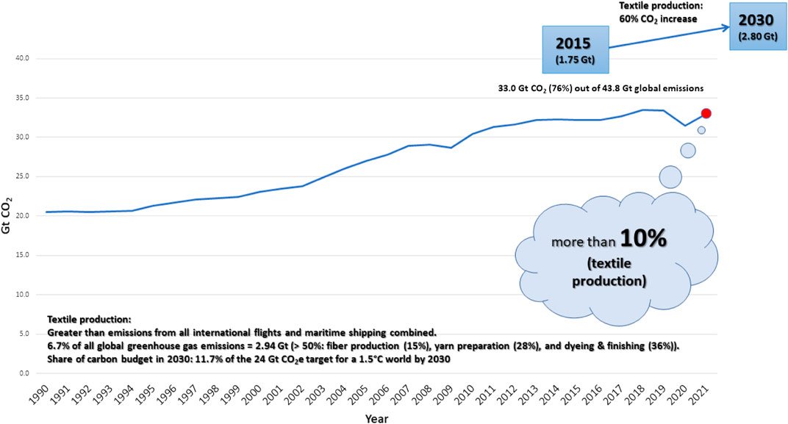
Fig. 45 איור 4.22: תרומת תעשיית הטקסטיל לפליטת פד“ח בהשוואה לפליטות מייצור אנרגיה, ביחידות של גיגה-טון לשנה. מקור – Leal Filho, W. et al. (2022) Frontiers.#
Reprinted with permission. Copyright {2023} American Chemical Society.
סיכום#
הפרק עוסק בחומרי גלם ובתעשייה, תוך התמקדות בהשפעות הסביבתיות של ייצור מוצרים.
הפרק בוחן חמישה ענפי ייצור בעלי השפעה סביבתית גדולה במיוחד: (1) ייצור פלדה, (2) ייצור בטון (בדגש על מלט), (3) הפקת מתכות עבור מוצרי חשמל ואגירת אנרגיה (כגון ליתיום, קובלט, עפרות נדירות), (4) סינתזה של מוצרים פטרו-כימיים, פלסטיק ו-PFAS, (5) תעשיית הטקסטיל.
ענפי הייצור הללו גורמים לנזקים סביבתיים נרחבים הכוללים צריכת אנרגיה מוגברת, פליטת פד“ח הגורמת להתחממות גלובלית, זיהום האטמוספרה ומקורות מים, הצטברות חומרים רעילים בבני אדם, שימוש מסיבי במים (בכרייה), ופגיעה בשטחים פתוחים (שינוי שימושי קרקע).
צריכת חומרי הגלם העולמית צפויה כמעט להכפיל את עצמה, מ-79 GT ב-2011 ל-167 GT ב-2060.
הקשר בין צמיחה כלכלית לעלייה בצריכת משאבים מוסבר על ידי פרדוקס ג’בונס, בו התייעלות טכנולוגית מובילה לחיסכון כספי המושקע חזרה בהרחבת הייצור, מה שמגביר את צריכת המשאב.
יותר ממחצית מפליטות גזי החממה (כ-50 GT שווה ערך פד“ח ב-2060) ינבעו מפעילויות הקשורות בהפקה, שינוע וייצור של חומרי גלם.
ישנם ארבעה אתגרים סביבתיים מרכזיים בפעילות תעשייתית:
מעבר ממסלול חיים ליניארי (ייצור–שימוש–הטמנה) לכלכלה מעגלית (ייצור–שימוש–פירוק ומחזור–ייצור מוצרים חדשים).
מעבר מחומרי גלם מתכלים למתחדשים, תוך הקפדה על צריכה בקצב שאינו עולה על קצב התחדשותם.
החלפת חומרים רעילים בחלופות שרעילותן לבני אדם ולמערכת האקולוגית פחותה.
נטרול זיהומים וניקוי אתרים שסבלו מזיהום תעשייתי.
ראוי לשים לב לנטייה להעביר את המחזור של מרבית מוצרי הצריכה (פלדה, אלקטרוניקה, פלסטיק, טקסטיל, נייר, ועוד) לארצות עניות שם נגרמת פגיעה סביבתית ובריאותית חמורה.[349] אזרחי החברה המערבית צורכים ואזרחי הארצות העניות משלמים את המחיר.
ייצור פלדה תרם כ-8% מפליטת הפד“ח העולמית בשנת 2020. מחזור פלדה מקטין את הפליטות באופן משמעותי, וישנם מאמצים לפיתוח פלדה ירוקה (Green Steel) באמצעות אנרגיה חלופית ושימוש במימן.
ייצור מלט הוא החלק הבעייתי ביותר בייצור בטון מבחינה סביבתית, והוא תורם כ-8% מכלל פליטות הפד“ח של האנושות. בנוסף, ייצור בטון גורע כ-4 מיליארד מ“ק מים מדי שנה ממחזור המים הטבעי ונוגס בשטחים פתוחים.
הביקוש למתכות (ליתיום, קובלט, עפרות נדירות, ואחרות) עולה במהירות עקב המעבר לאנרגיה מתחדשת ורכבים חשמליים. כריית מתכות צורכת אנרגיה, פולטת גזי חממה, מזהמת את סביבת המכרה ואת מקורות המים ופוגעת באנשים החיים בסמוך למכרה.
כריית קובלט בקונגו מעלה סוגיות אתיות חמורות עקב תנאי עבודה קשים, כולל עבודת ילדים.
כריית עפרות נדירות כרוכה בשימוש בכימיקלים מסוכנים ושחרור יסודות רדיואקטיביים נלווים הגורמים לזיהום סביבתי. בנוסף, רוב העפרות הנדירות נכרות בסין מה שגורם למתח גיאופוליטי.
פסולת ומחזור מתכות: בראשית שנות ה-20 של המאה ה-21 היו מעל 60 מיליון טון של פסולת אלקטרונית ברחבי העולם, ורק כחמישית נאספה ומוחזרה. שיעורי המחזור של ליתיום ועפרות נדירות שהשימוש בהם גדל מידי שנה נמוכים מאוד (פחות מ-1%).
יצור פטרו-כימיקלים ובראשם דשנים, מוצרי פלסטיק, PFAS וצמיגי מכוניות צורך אנרגיה רבה, כרוך בפליטות גזי חממה (כ-1.5 גיגה-טון פד“ח מידי שנה) ובזיהום הסביבה.
עשרות אלפי טון של פלסטיק נפלטים לסביבה היבשתית והימית מידי שנה, חלקם הגדול נשחק ומשחרר חומרי לוואי רעילים והופך לחלקיקי מיקרו- וננו-פלסטיק הנכנסים לגוף של בני אדם ובעלי חיים וגורמים לנזקים בריאותיים.
תרכובות ה-PFAS יציבות במיוחד ונוטות להצטבר בסביבה ובגוף של בני אדם ובעלי חיים ולגרום לנזקים בריאותיים.
ייצור טקסטיל מהווה מטרד סביבתי חמור ומהווה דוגמא ליכולתנו להשפיע על כמות הנזק הסביבתי באמצעות שינוי הרגלי צריכה.